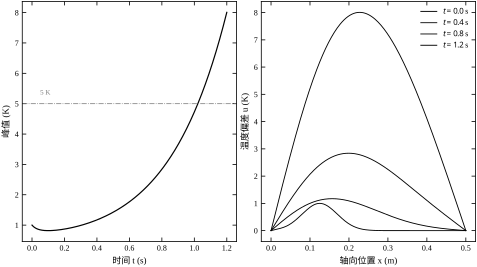
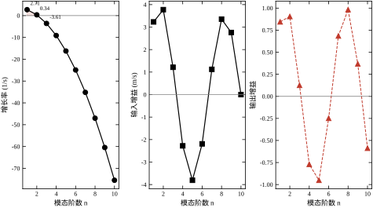
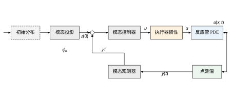
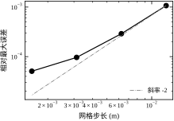
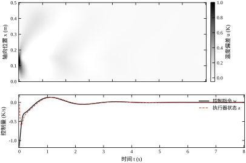
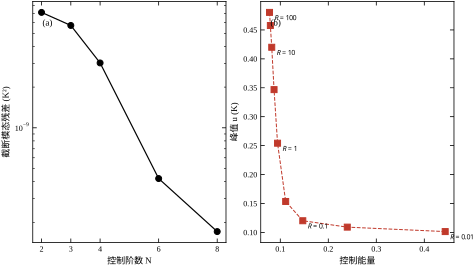
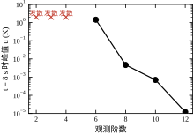
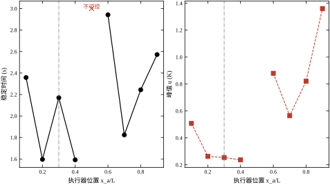
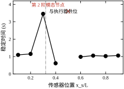
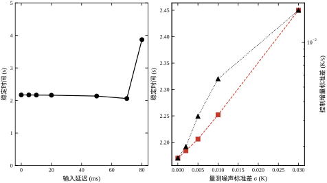

集中参数控制的默认假设是：被控对象的“状态”只有几个数，用一个测点、一个执行器就能把它按住。化工装置里大量回路确实如此——一个缓冲罐的液位、一台换热器的出口温度，空间上的不均匀性被搅拌或湍流抹平，剩下一个随时间变化的标量。可一旦对象是细长的管、薄的板、宽幅的带材，“同一时刻不同位置”就成了不能被抹掉的事实。温度沿轴向有梯度，浓度沿反应器长度有分布，应力沿轧件宽度有高低。这类对象的数学模型是偏微分方程，状态属于无穷维函数空间，控制理论把它们统称为分布参数系统（distributed parameter system，DPS）。
本章只处理一条空间维度。这不是为了简化而简化：反应管、管式裂解炉、带钢连续退火线、晶体生长炉，主流工业对象的纵横比都在十倍以上，轴向动力学与径向动力学的时间尺度相差一两个数量级，把径向集总掉是工程上站得住的近似。一维情形足以把 DPS 控制的所有关键问题——模态、截断、溢出、执行器与传感器的空间位置——完整地展示出来，而且每一个量都能算到小数点后四位。
本章的算例是一根薄壁反应管，长 L=0.50 m，轴向热扩散率 \alpha=0.02 m^{2}/s，线性化放热增益 \lambda=3.5 s^{-1}。两端插在恒温夹套里，温度偏差恒为零；管内某点有一个电加热片，用来压制反应放热；管壁某点焊一支热电偶，用来测温。初始时刻管内有一个 1 K 的热点，位于 x=0.125 m，半宽 0.045 m。没有控制时，这个热点会怎样演化？
先做量级估计。热扩散走过全管的时间是 L^{2}/\alpha=0.25/0.02=12.5 s，而反应放热的特征时间是 1/\lambda=0.2857 s，两者相差 43.75 倍。也就是说，热量还没来得及沿管子散开，反应已经把温度推上去了。数值仿真给出的结果更直接：初始峰值 1.0007 K，1.2 s 后峰值 8.0084 K，峰值越过 5 K 的时刻是 1.0217 s。管子在这个时间尺度上没有任何自我保护能力，图 74-2 的实线给出了这条指数上扬的峰值轨迹。
这个算例的教学价值在于它不是一个“整体升温”的问题。若热源均匀、边界均匀，温度剖面会保持初始形状整体放大，控制一个测点就等于控制全管。实际不是这样：初始热点是局部的，放热项按当地温度放大它，导热项则把它向两侧摊开，两个机制在不同位置上强度不同，剖面的形状在演化中不断改变。图 74-2 的右图给出四个时刻的空间剖面：初始的高斯峰逐渐抬高、变窄，两侧出现明显的肩部。到了 1.2 s，最高点已经不在原来的 0.125 m 处，而是向管子中部漂移。只压一个测点的温度，很可能压住的是剖面的一个局部，而峰值已经跑到别处。

两端固定的边界条件决定了这个对象有一套天生的“标准形状”。对区间 [0,L] 上满足 u(0)=u(L)=0 的函数，正弦族 \sin(n\pi x/L) 是完备正交基。任意时刻的温度剖面都可以写成
u(x,t)=\sum_{n=1}^{\infty}z_n(t)\sin\frac{n\pi x}{L} \tag{74-1}
系数由投影给出，z_n(t)=\frac{2}{L}\int_0^L u(x,t)\sin(n\pi x/L)\,\mathrm{d}x。这套展开不是数学上的方便选择，而是对象自身的性质：把式 (74-1) 代回热方程，各个 z_n 彼此解耦，每一个都独立地按自己的速率演化。导热的二阶导数把 \sin(n\pi x/L) 变成 -(n\pi/L)^{2}\sin(n\pi x/L)，于是第 n 阶的净增长率是
\gamma_n=\lambda-\alpha\left(\frac{n\pi}{L}\right)^{2} \tag{74-2}
这个式子把 DPS 的核心矛盾写在一行里：放热项对所有模态一视同仁地加 \lambda，导热项对高阶模态的惩罚却按 n^{2} 增长。 低阶模态波长长、导热来不及把它们抹平，因此可能不稳定；高阶模态波长短、导热极强，天然稳定。本章参数下，\gamma_1=2.7104、\gamma_2=0.3417、\gamma_3=-3.6061，从第 3 阶起全部为负。不稳定模态只有两个，这就是全部麻烦的来源，也是全部机会的来源。
图 74-1 的三张子图把这件事画全了。上图为 \gamma_n 随阶数的变化，前两阶在零线以上，第 3 阶开始迅速下坠，到第 8 阶已经是 -47.0324；中图为输入模态增益 b_n，它不单调，第 5 阶达到绝对值最大 3.8074；下图为输出模态增益 c_n=\sin(n\pi x_s/L)，呈明显的振荡，并在某些阶上接近零。三张图放在一起看，才能理解为什么“控住前两阶”这件事既简单又危险：简单在于只有两阶需要压，危险在于执行器和传感器都可能在某一阶上恰好失效。

初学者容易把 DPS 控制当成“把 PDE 离散成很多 ODE，然后套用第 15 章的 LQR”。这个理解会漏掉三件性质完全不同的事，而它们在实践中造成的故障也完全不同。
第一件是截断。 无穷维的模态不可能全部放进控制器。工程上取前 N 阶做模型，第 N+1 阶以后扔掉。扔掉的部分不是不存在，它们仍然被执行器激励、被传感器看见，只是控制器不知道。当控制器按“只有 N 阶”的模型算出控制量时，这个控制量会通过 b_{N+1},b_{N+2},\dots 灌进被忽略的模态。若这些模态本身稳定，它们会把能量耗掉，问题不大；若控制量足够大、频率足够高，被忽略的模态可能被激起可观的振幅，反过来污染测量，形成控制溢出（control spillover）。本章 §74.7 会给出一个干净的例子：控制阶数取 1 时，闭环在 8 s 内不收敛，末值 3.37918 K，残余模态能量 11.43，控制器输出的控制量大部分用来喂养第 2 阶，而这正是它唯一没有建模的模态。
第二件是观测溢出。 传感器只测一个点，观测器要从前 N_{\mathrm{obs}} 阶的模型反推整条剖面。未被建模的高阶模态会通过 c_n 混进测量，观测器把它误当成低阶模态的偏差去修正，修正量再通过观测器增益放大回低阶估计，形成观测溢出（observation spillover）。§74.7 的扫描显示，观测阶数取 2、3、4 时闭环直接发散；取 6 时虽然不发散，但 8 s 内峰值仍有 1.6181 K，末值 1.4391 K，始终没有进入 0.10 K 的稳态带。这两个现象在集总参数系统里没有对应物，是 DPS 独有的。
第三件是空间布置。 执行器和传感器放在哪里，直接决定某些模态能不能被推动、能不能被看见。b_n 与 c_n 都是位置的函数，位置选得不好，某个关键模态的增益恰好为零。本章的基准算例里，执行器在 x_a=0.15 m、传感器在 x_s=0.16 m，都刻意避开了 L/2=0.25 m 这个位置——因为第 2 阶模态在那里有一个节点，\sin(2\pi\cdot 0.5)=0。§74.9 的扫描会把这个结论量化：执行器放在 0.5L 时 b_2=0，设计阶段直接判定“输入对不稳定模态不能控”；传感器放在 0.5L 时 c_2=0，判定“输出对不稳定模态不能观”。
这三件事有一个共同的数学根源：截断把无穷维系统变成了有限维系统，但物理对象没有跟着变。 控制器越“聪明”、带宽越高，越容易去激励那些它看不见的模态。这也是为什么本章在控制器里特意加了一个时间常数 0.05 s 的执行器一阶惯性——不是为了更真实，而是为了让控制量在高频段自然滚降，从源头上减少对高阶模态的激励。这个改动对结果的影响在 §74.6 会看到：加上它之后，控制阶数从 2 到 8 的稳态时间几乎不变（2.170、2.164、2.162、2.164、2.164 s），说明截断误差已经被压到次要位置。
为便于后续各节对照，先把三条基线列在表 74-1。全部数字出自 §74.12 的脚本，真值模型取 20 阶模态，仿真步长 0.002 s，控制目标是把全管温度压到 0.10 K 以内并保持。
表 74-1 三条基线的性能指标
| 方案 | 稳定时间（s） | 峰值（K） | 控制能量 | 末值（K） |
|---|---|---|---|---|
| 开环（截止 1.2 s） | 未稳定 | 8.0084 | 0 | 8.0084 |
| 模态全状态反馈 N=2 | 1.028 | 0.1053 | 0.0946 | 0.0007 |
| 点测温输出反馈 N=2,N_{\mathrm{obs}}=10 | 2.170 | 0.2542 | 0.0943 | 0.0007 |
三行数字里有两点需要提前说明。其一，开环那一行的“峰值”是 1.2 s 时刻的值，不是全程最大值；若继续仿真，峰值会按 e^{2.7104t} 增长，8 s 时早已超出任何物理意义。其二，全状态反馈与输出反馈的控制能量几乎相同（0.0946 与 0.0943），差别全部体现在过渡过程上：全状态的峰值只有 0.1053 K，输出反馈是 0.2542 K，稳定时间也从 1.028 s 拉长到 2.170 s。这个差距不是控制器设计得不好，而是信息缺口的价格——只测一个点，就必须先用观测器把整条剖面“猜”出来，猜测需要时间，这段时间里热点还在长。
表 74-1 还隐含一个容易误读的事实：两条闭环的末值都精确到 0.0007 K，看起来性能一样好。稳态精度由积分作用或模型准确性决定，本章的 LQR 没有积分器，末值之所以接近零，是因为对象在原点处只有一个平衡点、且闭环把所有模态都压到了负半平面。真正区分控制器好坏的是过渡段，这也是后面所有扫描实验统一用“稳定时间 + 峰值”作为主指标的原因。
三个基线的口径需要交代清楚，否则后面的数字没法互相比较。开环为什么只截到 1.2 s：第 1 阶的时间常数是 1/2.7104=0.369 s，1.2 s 约为 3.3 个时间常数，温度已涨到 8.0084 K。再往后仿真，数值会指数增长到失去物理意义（真实装置早已触发联锁），所以开环一行只作为“不控制的后果”示意，不参与性能排序。阈值为什么取 0.10 K：这是本章假定的工艺允许残余偏差，相当于初始热点 1.0007 K 的 10%。阈值取得越小，稳定时间越长，且对数值噪声越敏感；取 0.10 K 是一个“既能看到差别、又不至于被噪声干扰”的折中。换成别的工艺，这个数要按实际允许偏差改，结论的绝对数值会变，但趋势不变。真值为什么取 20 阶：N=2 时残余能量占总能量的 7.1\times10^{-9}，对应温度幅值约 10^{-4} K，比 0.10 K 的阈值小三个数量级，因此 20 阶足以充当“真值”；若残余能量占到 1% 以上，所有结论都要打折扣。
这三条口径合起来构成本章的“实验台”：同一初始条件（0.25L 处峰值 1.0007 K 的高斯热点）、同一仿真时长（8 s）、同一阈值（0.10 K）、同一真值模型（20 阶）。后续任何一张表、任何一条曲线，都是在这张实验台上换一个参数得到的。读者若要复现，只需改 code/ch074_sim.py 参数区的一个常数，其余不动。
本章讲的是“对象是 PDE 时，控制器怎么设计”。它与几章内容相邻，但边界清楚，先划开以免重复。
这个分工也决定了本章的写法：不重复推导 LQR 与 Kalman 滤波的标准结果，只讲它们在模态坐标下变成什么样子、哪些参数获得了新的物理含义。读者若对 Riccati 方程的推导不熟，应先回看第 15 章与第 22 章。
后续各节的安排如下。§74.2 建立数学模型，从能量方程推到模态方程，说明半群、谱、截断误差的确切含义；§74.3 给出七步设计流程，包括执行器惯性增广、可控可观检查、LQR 与观测器的求解顺序；§74.4 讨论连续时间情形，重点是全状态反馈能达到的性能上限；§74.5 讨论离散化，用有限差分收敛实验说明“空间离散”与“模态截断”是两种性质不同的近似；§74.6 给出闭环稳定性与性能的实测结果；§74.7 逐条解释各参数的作用；§74.8 总结调参顺序与经验规则；§74.9 讨论优化方向，包括执行器与传感器的位置优化；§74.10 讲工程落地，包括延迟、噪声、采样周期和模型降阶验证；§74.11 给出适用边界与失效模式；§74.12 给出完整代码。
一个提醒：本章所有结论都建立在“线性化”之上。放热项 \lambda u 是线性化后的近似，真实反应的 Arrhenius 非线性在温度偏差较大时会显著改变增益。本章的闭环把偏差压在 0.25 K 量级，线性化误差可以接受；若工艺要求允许 5 K 以上的偏差，必须回到非线性模型，那已超出本章范围。
本节把 §74.1 的直观说法变成可计算的数学。顺序是：从能量方程出发，做无量纲化，说明算子与半群，写出模态方程，定义截断与溢出，最后给出本章算例的全部模态数据。
设管壁温度 T(x,t)，密度 \rho、比热 c_p、导热系数 k 均为常数，管内发生一级放热反应，放热速率用 Arrhenius 形式 Q(T)=Q_0\exp(-E/(RT)) 描述。一维能量守恒给出
\rho c_p\frac{\partial T}{\partial t}=k\frac{\partial^{2}T}{\partial x^{2}}+Q(T)+g(x)w(t) \tag{74-3}
其中 g(x) 是加热片的功率空间分布，w(t) 是控制输入（单位 K/s，已把功率除以 \rho c_p 折算成温升速率）。两端插在恒温夹套中，取
T(0,t)=T(L,t)=T_b \tag{74-4}
设稳态工作点为 T_s(x)，满足 0=kT_s''+Q(T_s) 及同样的边界条件。定义偏差 u=T-T_s，把 Q 在 T_s 处一阶展开，Q(T)\approx Q(T_s)+Q'(T_s)u，代入式 (74-3) 并利用稳态方程，得
\frac{\partial u}{\partial t}=\alpha\frac{\partial^{2}u}{\partial x^{2}}+\lambda(x)u+g(x)w(t),\qquad u(0,t)=u(L,t)=0 \tag{74-5}
其中 \alpha=k/(\rho c_p) 是热扩散率，\lambda(x)=Q'(T_s(x))/(\rho c_p) 是当地线性化放热增益。本章进一步把 \lambda(x) 取为常数 \lambda=3.5 s^{-1}，这是“反应区沿轴向均匀”的简化。真实反应器的 \lambda(x) 通常在入口附近最大，这会让各阶模态的增长率不再是式 (74-2) 的简单形式，模态之间也不再正交解耦——那属于变系数 DPS，需要数值求解特征值问题，本章不展开。
式 (74-5) 是本章的全部数学对象。它线性、定常、两端 Dirichlet。选 Dirichlet 而不是 Neumann，是因为夹套的换热系数远大于管内导热，壁温被强行钉在 T_b；若夹套换热有限，边界条件应改成 Robin 型，模态不再是纯正弦，但下面的整套方法（投影、截断、LQR）仍然适用，只是基函数要换成相应的特征函数。
把 x 用 L 归一、t 用 L^{2}/\alpha 归一，记 \xi=x/L、\tau=\alpha t/L^{2}，式 (74-5) 变成
\frac{\partial u}{\partial \tau}=\frac{\partial^{2}u}{\partial \xi^{2}}+\mathrm{Da}\,u+G(\xi)W(\tau) \tag{74-6}
\mathrm{Da}=\frac{\lambda L^{2}}{\alpha} \tag{74-7}
\mathrm{Da} 是 Damköhler 数，衡量“反应放热”与“导热耗散”的相对强度。本章 \mathrm{Da}=3.5\times 0.25/0.02=43.75，是一个很大的值。不稳定模态的个数由 \mathrm{Da}>(n\pi)^{2} 决定，解出 n<L\sqrt{\lambda/\alpha}/\pi=0.1592\times 13.229=2.106，即只有 n=1,2 两阶不稳定。这个估算与 §74.1 的 \gamma_n 数值完全一致，说明“不稳定模态数”是一个可以由两个物理参数直接算出的整数，不需要仿真。
\mathrm{Da} 的大小决定了控制策略的难度。\mathrm{Da}<1 时全部模态稳定，控制只是为了改善过渡品质；\mathrm{Da} 在 1 到 100 之间时，少数低阶模态不稳定，需要主动控制；\mathrm{Da}>100 时不稳定模态增多，控制器阶数必须相应提高，否则截断误差会吞掉稳定性。本章的 43.75 落在中间区域，恰好是“两阶控制、十阶观测”这种典型配置能处理的范围。
把式 (74-5) 写成抽象发展方程
\dot u=\mathcal{A}u+\mathcal{B}w,\qquad u(0)=u_0 \tag{74-8}
其中 \mathcal{A}=\alpha\,\mathrm{d}^{2}/\mathrm{d}x^{2}+\lambda I，定义域 D(\mathcal{A})=H^{2}(0,L)\cap H_0^{1}(0,L)，\mathcal{B}=g(x) 是乘算子。\mathcal{A} 是一个无界算子：二阶导数在 L^{2} 中没有界，这正是 DPS 与有限维系统最本质的区别。
无界并不妨碍解的存在性。\mathcal{A} 是自伴算子，且 -(\mathcal{A}-\lambda I) 是正定的，由 Lumer–Phillips 定理，\mathcal{A} 生成一个 C_0 半群 e^{\mathcal{A}t}，其谱由特征值 \gamma_n 与特征函数 \phi_n(x)=\sqrt{2/L}\sin(n\pi x/L) 组成，且特征函数构成 L^{2}(0,L) 的完备正交基。于是
e^{\mathcal{A}t}u_0=\sum_{n=1}^{\infty}e^{\gamma_n t}\langle u_0,\phi_n\rangle\phi_n \tag{74-9}
这个式子是本章所有模态方法的合法性依据。它说明：不需要对空间做任何离散，解本身就可以按模态展开；模态系数的时间演化是精确的指数，没有离散误差。 后面的有限差分离散只是为了在 §74.5 里说明“另一种近似会带来什么误差”，真正的仿真用的是式 (74-9)，也就是解析模态推进。
半群的语言还解释了一个容易混淆的问题：为什么不能直接写 e^{\mathcal{A}t}\mathcal{B} 的传递函数？因为 \mathcal{B} 作为乘算子是有界的（g 是光滑的高斯函数），但输出算子 \mathcal{C}u=u(x_s)（点测量）在 L^{2} 中无界。真实探头有有限宽度，把 \mathcal{C} 换成一个宽度为 \delta 的加权平均就变成有界泛函；本章按点处理，误差在探头宽度远小于波长时可以忽略。若传感器宽度与高阶模态波长可比，c_n 需要乘以一个 sinc 型的衰减因子，这一点在 §74.10 讨论。
将式 (74-1) 代入式 (74-5)，两边乘 \sin(m\pi x/L) 并在 [0,L] 上积分，利用正交性 \int_0^L\sin(n\pi x/L)\sin(m\pi x/L)\mathrm{d}x=(L/2)\delta_{nm}，得
\dot z_n=\gamma_n z_n+b_n w(t),\qquad n=1,2,\dots \tag{74-10}
b_n=\frac{2}{L}\int_0^L g(x)\sin\frac{n\pi x}{L}\,\mathrm{d}x \tag{74-11}
这里的 2/L 是必须写对的系数，也是实际编程中最容易漏的一项。若漏掉它，模态增益只有真值的 2/L=4 分之一（本章 L=0.5），控制器会误以为执行器很弱，从而给出过大的增益，闭环在高阶模态上失稳。本章代码里专门为这一项写了注释，就是因为它曾经造成过一次“怎么调都不对”的排查。
输出方程同样简单。点测温 y(t)=u(x_s,t)，代入展开式得
y(t)=\sum_{n=1}^{\infty}c_n z_n(t),\qquad c_n=\sin\frac{n\pi x_s}{L} \tag{74-12}
c_n 的绝对值不超过 1，且在 n\pi x_s/L=k\pi 时为零，即 x_s=kL/n。对第 2 阶模态，节点在 x_s=L/2；对第 3 阶，节点在 L/3 与 2L/3。节点位置是布置传感器时唯一需要记住的几何事实。
把式 (74-10) 与式 (74-12) 写成矩阵形式，取前 N 阶：
\dot{\boldsymbol z}_N=\boldsymbol A_N\boldsymbol z_N+\boldsymbol b_N w,\qquad y=\boldsymbol c_N^{\mathsf T}\boldsymbol z_N \tag{74-13}
其中 \boldsymbol A_N=\mathrm{diag}(\gamma_1,\dots,\gamma_N)，\boldsymbol b_N=[b_1,\dots,b_N]^{\mathsf T}，\boldsymbol c_N=[c_1,\dots,c_N]^{\mathsf T}。这三个矩阵就是控制器看到的全部世界。真值模型用 N_{\mathrm{true}}=20 阶，控制器用 N\ll N_{\mathrm{true}} 阶，两者之差就是被截掉的部分。
把真值状态分成“建模部分”与“残余部分”：\boldsymbol z=[\boldsymbol z_N;\boldsymbol z_R]，R 表示 N+1 到 20 阶。闭环下两者满足
\dot{\boldsymbol z}_N=\boldsymbol A_N\boldsymbol z_N+\boldsymbol b_N w(\hat{\boldsymbol z}_N),\qquad \dot{\boldsymbol z}_R=\boldsymbol A_R\boldsymbol z_R+\boldsymbol b_R w(\hat{\boldsymbol z}_N) \tag{74-14}
注意第二式：残余模态的演化由同一个控制量驱动，而控制量只依赖 \hat{\boldsymbol z}_N。这就是溢出的数学定义——控制器对 \boldsymbol z_R 一无所知，却实实在在地给它输入能量。若 \boldsymbol A_R 的所有特征值为负且 |b_n| 随 n 衰减得足够快，残余模态的稳态振幅是 |b_n w|/|\gamma_n|，量级可控；若控制量含有高频成分，w 的频谱落在 \gamma_n 附近，残余模态会被共振式地放大。
本章用一个可计算的量来监控这件事：残余能量
E_R(t)=\sum_{n=N+1}^{20}z_n^{2}(t) \tag{74-15}
它与真实温度的 L^{2} 范数只差一个常数因子 L/2，因此可以直接当作“被扔掉的能量”来读。§74.7 的控制阶数扫描里，N=1 的残余能量是 11.43，N=2 降到 7.1\times10^{-9}，相差九个数量级，这就是“该建几阶”的最直接答案。
观测溢出走的是另一条路径。观测器用前 N_{\mathrm{obs}} 阶模型，输入是标量测量 y。真实测量里含有残余模态的贡献 \sum_{n>N_{\mathrm{obs}}}c_n z_n，观测器把它当成“模型不准”的误差，通过增益 \boldsymbol L 强行分摊到前 N_{\mathrm{obs}} 阶的估计上。若 \boldsymbol L 很大（高带宽观测器），这个错误分摊会被放大，估计值抖动，控制量抖动，再通过 b_n 激励更多残余模态。观测溢出与控制溢出的耦合是 DPS 闭环失稳的主要机制，比单纯的“模型不准”严重得多。
表 74-2 给出前 8 阶的 \gamma_n、b_n、c_n，全部由 §74.12 的脚本计算。执行器位置 x_a=0.15 m，高斯宽度 \sigma_a=0.01 m；传感器位置 x_s=0.16 m。
表 74-2 前 8 阶模态参数
| n | \gamma_n（s^{-1}） | b_n | c_n |
|---|---|---|---|
| 1 | 2.7104 | 3.2297 | 0.8443 |
| 2 | 0.3417 | 3.7743 | 0.9048 |
| 3 | −3.6061 | 1.2143 | 0.1253 |
| 4 | −9.1331 | −2.2780 | −0.7705 |
| 5 | −16.2392 | −3.8074 | −0.9511 |
| 6 | −24.9245 | −2.1899 | −0.2487 |
| 7 | −35.1888 | 1.1221 | 0.6845 |
| 8 | −47.0324 | 3.3528 | 0.9823 |
读这张表要注意三件事。
第一，\gamma_n 按 n^{2} 下坠，b_n 与 c_n 却在振荡。 \gamma_8/\gamma_3=13.04，衰减很快；但 |b_8|=3.3528 比 |b_3|=1.2143 还大，|c_8|=0.9823 接近最大值。原因是执行器宽度 \sigma_a=0.01 m 远小于波长 2L/n=0.125 m（n=8），高斯在正弦的一个周期内几乎是 \delta 函数，投影结果就是该点的正弦值，当然不会随 n 衰减。这个事实很重要：执行器越“点”，高频增益越不衰减，溢出的风险越大。 宽执行器（\sigma_a 大）会让 b_n 快速衰减，代价是低阶增益也变小。
第二，b_5=-3.8074 是前 8 阶里绝对值最大的。 执行器在 0.30L，第 5 阶在 0.2L、0.4L、0.6L、0.8L 有节点，0.3L 恰好位于两个节点中间的反相区，投影系数为负且幅值大。这说明“执行器位置”不是选一个“离热点近”的地方就行，它决定了各阶增益的符号与大小，进而决定控制器把能量送进哪一阶。
第三，c_2=0.9048 是本例能控的前提。 若传感器放在 L/2，c_2=0，第 2 阶完全不可见，而它恰恰是第二阶不稳定模态。这就是 §74.9 扫描中 x_s/L=0.50 一行显示“发散（输出对不稳定模态不能观）”的原因。c_1=0.8443 与 c_2=0.9048 都接近 1，说明 0.32L 这个位置对前两阶都“看得清”。
初始剖面的模态分解同样值得一看。z_0=[0.3066,0.3847,0.2229,0.0004,-0.1170,-0.1065,-0.0444,0.0006]，前两阶占能量的 75.94%。也就是说，初始热点的主要能量集中在那两个不稳定模态上，高阶模态的初始含量很小。这解释了为什么 N=2 的控制阶数就足够——不是因为高阶不重要，而是因为初始激励小，且高阶本身衰减快（\gamma_3=-3.6061，时间常数 0.277 s）。若初始剖面更尖锐（比如宽度 0.01 m），高阶含量会显著上升，N=2 就不够了，这也是 §74.8 要强调“控制阶数要按初始条件与扰动频谱定，不能照抄”的原因。
模态方程 (74-10) 是一个“逐阶独立”的常微分方程，但它与原始 PDE 的能量关系需要单独核对，否则容易在离散实现里丢掉系数。把式 (74-5) 两边乘 u，在 [0,L] 上积分，利用分部积分与边界条件 u(0)=u(L)=0，得
\frac{1}{2}\frac{\mathrm{d}}{\mathrm{d}t}\int_0^L u^{2}\,\mathrm{d}x =-\alpha\int_0^L\left(\frac{\partial u}{\partial x}\right)^{2}\mathrm{d}x +\lambda\int_0^L u^{2}\,\mathrm{d}x +w\int_0^L g(x)u\,\mathrm{d}x \tag{74-16}
左边是“能量”的变化率，右边三项分别是导热耗散、反应放热、执行器注入。把 u=\sum z_n\sin(n\pi x/L) 代入，利用正交性，三项分别变成
\int_0^L u^{2}\,\mathrm{d}x=\frac{L}{2}\sum_{n=1}^{\infty}z_n^{2},\qquad \int_0^L\left(\frac{\partial u}{\partial x}\right)^{2}\mathrm{d}x =\frac{L}{2}\sum_{n=1}^{\infty}\left(\frac{n\pi}{L}\right)^{2}z_n^{2} \tag{74-17}
\int_0^L g(x)u\,\mathrm{d}x=\frac{L}{2}\sum_{n=1}^{\infty}b_n z_n \tag{74-18}
后两式合起来给出一个重要的结论：导热耗散对第 n 阶的权重是 (n\pi/L)^{2}，按 n^{2} 增长。 这就是“高阶模态天然稳定”的能量解释——它们的空间梯度大，导热把它们“磨平”得特别快。第 8 阶的耗散权重是第 1 阶的 64 倍，即使放热项对所有阶一视同仁，高阶也留不住能量。
把式 (74-17)、(74-18) 代回式 (74-16)，两边除以 L/2，得
\sum_{n=1}^{\infty}z_n\dot z_n =\sum_{n=1}^{\infty}\left[\lambda-\alpha\left(\frac{n\pi}{L}\right)^{2}\right]z_n^{2} +w\sum_{n=1}^{\infty}b_n z_n \tag{74-19}
这与把式 (74-10) 两边乘 z_n 再求和的结果完全一致：
\sum_n z_n\dot z_n=\sum_n\gamma_n z_n^{2}+w\sum_n b_n z_n \tag{74-20}
两式逐项对应，说明模态方程没有丢系数，2/L 的归一化是自洽的。这个核对看起来多余，但它是实际编程时发现“b_n 少乘 2/L”的唯一解析手段：若 b_n 漏了系数，式 (74-18) 与式 (74-20) 就对不上，能量在闭环里会凭空产生或消失。数值仿真不一定能立刻暴露这个问题（闭环可能仍然稳定，只是增益偏大），但能量核对一定会。
式 (74-16) 还有一个诊断用途。定义“模态能量” E_n=\frac{L}{2}z_n^{2}，它的变化率是
\dot E_n=L\left(\gamma_n z_n^{2}+b_n z_n w\right) \tag{74-21}
当 w 为零时，\dot E_n=2\gamma_n E_n，能量按 e^{2\gamma_n t} 演化。第 1 阶的能量时间常数是 1/(2\times2.7104)=0.184 s，比幅值时间常数 0.369 s 快一倍——这是“能量按幅值平方增长”的必然结果。读图时若看到幅值在 1 s 内涨了 15 倍，能量就涨了 225 倍，不要误以为算错了。
本节给出从 PDE 到可运行控制器的七步流程。每一步都对应 §74.12 代码里的一个函数或一段逻辑，读者可以对照阅读。流程的顺序不是随意排的：先做可控可观检查再解 Riccati，可以避免在不能控的对象上白算一场；先把执行器惯性增广进去再设计增益，可以避免“设计时假设瞬时响应、运行时发现高频溢出”的返工。
从能量方程出发，写出式 (74-5) 形式的线性化模型。需要确认四件事：空间维数（本章一维）、边界条件类型（本章 Dirichlet）、\alpha 与 \lambda 的数值、以及执行器与传感器的空间分布 g(x) 与 c(x)。
这一步最容易出错的地方是把 \lambda 当成常数而不加验证。\lambda=Q'(T_s)/(\rho c_p)，它依赖工作点。若工艺负荷变化导致 T_s 移动，\lambda 会跟着变，不稳定模态的个数也可能变。工程上的做法是在几个典型工况下分别算 \lambda，取最坏情况设计控制器，再用增益调度覆盖其余工况。本章只用一个工况，\lambda=3.5 s^{-1}，对应 \mathrm{Da}=43.75。
按式 (74-11) 与式 (74-12) 算出 b_n、c_n，按式 (74-2) 算出 \gamma_n。然后选控制阶数 N 与观测阶数 N_{\mathrm{obs}}。这两个数不必相等，本章基准取 N=2、N_{\mathrm{obs}}=10，理由是：
这个“控制低阶、观测高阶”的非对称配置是 DPS 控制与集总参数控制最显著的差别之一。§74.7 的扫描会给出定量依据：N_{\mathrm{obs}} 从 6 增到 8，稳定时间从“不收敛”变成 2.382 s；从 8 增到 10，稳定时间降到 2.170 s；从 10 增到 12，进一步降到 1.136 s。收益在 10 阶之后仍在，但边际递减。
在解 Riccati 之前，先检查两个矩阵条件。对模态系统，PBH 判据退化成标量条件：
b_n\neq 0\quad\text{对所有}\ \gamma_n\ge 0,\qquad c_n\neq 0\quad\text{对所有}\ \gamma_n\ge 0 \tag{74-22}
这两个条件必须对所有不稳定模态成立，而不只是对前 N 阶。若执行器在某个不稳定模态的节点上，b_n=0，这一阶永远推不动；若传感器在节点上，这一阶永远看不见。两种情况都不是“调参能解决”的问题，必须改位置或加执行器/传感器。
本章代码把这两个检查写成显式判断：先算 b_n 与 c_n，若发现 |b_n|<10^{-9} 且 \gamma_n\ge 0，立即返回“输入对不稳定模态不能控”；观测侧同理。这样 §74.9 扫描到 x_a/L=0.50 或 x_s/L=0.50 时，程序给出的是干净的诊断信息，而不是一个数值溢出后的荒谬结果。工程代码里这种“早失败”比“晚崩溃”有价值得多。
真实执行器不是瞬时响应的。加热片的功率从指令到实际热流有一阶滞后，本章取时间常数 \tau=0.05 s，用状态 a 描述：
\dot a=\frac{1}{\tau}\big(w_{\mathrm{cmd}}-a\big),\qquad \dot{\boldsymbol z}_N=\boldsymbol A_N\boldsymbol z_N+\boldsymbol b_N a \tag{74-23}
把 a 并入状态，得增广系统
\begin{bmatrix}\dot{\boldsymbol z}_N\\ \dot a\end{bmatrix} =\underbrace{\begin{bmatrix}\boldsymbol A_N&\boldsymbol b_N\\ \boldsymbol 0&-1/\tau\end{bmatrix}}_{\boldsymbol A_{\mathrm{aug}}} \begin{bmatrix}\boldsymbol z_N\\ a\end{bmatrix} +\underbrace{\begin{bmatrix}\boldsymbol 0\\ 1/\tau\end{bmatrix}}_{\boldsymbol b_{\mathrm{aug}}}w_{\mathrm{cmd}} \tag{74-24}
这一步不是“为了更真实”的装饰，它直接决定了闭环能否稳定。原因在 §74.2.5 已经埋下：若假设执行器瞬时响应，控制量可以在一个采样周期内从 0 跳到满幅，其频谱极宽，会以 b_{N+1},b_{N+2},\dots 为通道把能量灌进未建模模态。加入一阶惯性后，控制量在 \tau=0.05 s 的时间尺度上平滑变化，截止频率约 1/(2\pi\tau)=3.18 Hz，高于这个频率的激励被压掉，溢出的源头被削弱。
这个改动的效果在调试时非常明显。未加惯性时，观测阶数取 3、4、8、10 都出现“稳定时间无穷大”，无论怎么调观测器带宽都无效；加上惯性后，控制阶数扫描的 2 到 8 阶全部收敛（2.162–2.170 s），只有观测阶数过低（2、3、4）仍然发散。后者是真正的观测溢出，前者是被执行器直通放大出来的假象。先区分“设计问题”与“建模遗漏”，再调参，这条经验在 §74.8 会再强调一次。
对增广系统 (74-24) 解连续时间代数 Riccati 方程
\boldsymbol A_{\mathrm{aug}}^{\mathsf T}\boldsymbol P+\boldsymbol P\boldsymbol A_{\mathrm{aug}} -\boldsymbol P\boldsymbol b_{\mathrm{aug}}r^{-1}\boldsymbol b_{\mathrm{aug}}^{\mathsf T}\boldsymbol P+\boldsymbol Q=\boldsymbol 0 \tag{74-25}
增益为 \boldsymbol k^{\mathsf T}=r^{-1}\boldsymbol b_{\mathrm{aug}}^{\mathsf T}\boldsymbol P，控制律
w_{\mathrm{cmd}}=-\big(\boldsymbol k_z^{\mathsf T}\hat{\boldsymbol z}_N+k_a a\big) \tag{74-26}
权重取 \boldsymbol Q=\mathrm{diag}(1,\dots,1,Q_{\mathrm{act}})，Q_{\mathrm{act}}=10^{-6}，r=1。Q_{\mathrm{act}} 取得极小，意思是“不关心执行器状态本身，只关心它别把模态推坏”；若取得大，控制器会倾向于让 a 快速归零，等价于强迫执行器高频动作，反而加重溢出。
本章基准解出的增益是 k_z=[5.5059,-1.4689]、k_a=0.4913。两个模态增益都是正数，说明控制方向正确：z_1 与 z_2 为正（热点）时，控制量为负（吸热）。k_1 比 k_2 大 3.75 倍，因为第 1 阶的增长率 2.7104 远大于第 2 阶的 0.3417，LQR 自然把更多权限分给更危险的那一阶。k_a=0.4913 是“执行器状态反馈”，它的作用是预判执行器的滞后：当 a 已经很大而模态还很小，控制器会提前收手，避免过冲。
观测器只估计模态，不估计执行器状态——后者由控制器自己的模型精确知道（指令是控制器发出的，惯性时间常数已知）。观测器方程为
\dot{\hat{\boldsymbol z}}=\boldsymbol A_{N_{\mathrm{obs}}}\hat{\boldsymbol z} +\boldsymbol b_{N_{\mathrm{obs}}}a+\boldsymbol L\big(y-\boldsymbol c_{N_{\mathrm{obs}}}^{\mathsf T}\hat{\boldsymbol z}\big) \tag{74-27}
增益 \boldsymbol L 由对偶 Riccati 方程给出。令 \boldsymbol Q_o=q_{\mathrm{obs}}\,\mathrm{diag}\big(1+(n/3)^{2}\big)，r_m=10^{-2}，解
\boldsymbol A\boldsymbol P_o+\boldsymbol P_o\boldsymbol A^{\mathsf T} -\boldsymbol P_o\boldsymbol c\boldsymbol c^{\mathsf T}\boldsymbol P_o/r_m+\boldsymbol Q_o=\boldsymbol 0, \qquad \boldsymbol L=\boldsymbol P_o\boldsymbol c/r_m \tag{74-28}
\boldsymbol Q_o 的阶数加权 1+(n/3)^{2} 是本章的一个关键设计。它表达的意思是：高阶模态的模型更不可信，因此允许估计误差更大。 若取 \boldsymbol Q_o=I，观测器会同等用力地去拟合所有阶，高阶的残余模态被强行塞进低阶估计，观测溢出严重。加权之后，前几阶的估计精度被优先保证，高阶的估计“松”一些，整体反而更稳。
基准参数下解出的前四个增益是 L_g=[45.673,-16.886,0.087,-2.071]。第一个分量 45.673 很大，说明测量残差主要被用来修正第 1 阶；第二个分量 -16.886 为负，因为 c_2>0 而第 2 阶与第 1 阶的空间形状在测点处符号相反，残差对两阶的修正方向自然相反；第 3 阶只有 0.087，几乎不修正，因为 \gamma_3=-3.61 已经足够快，观测器不需要为它花力气。
连续设计完成后，落地必须离散。本章仿真步长 dt=0.002 s，控制量每个步长更新一次，观测器用四阶 Runge–Kutta 单步推进（式 74-27 的右端在步内做四次求值）。真值模型用指数矩阵精确推进：
z_n(t+dt)=e^{\gamma_n dt}z_n(t)+\frac{e^{\gamma_n dt}-1}{\gamma_n}b_n a(t+dt/2) \tag{74-29}
其中 a(t+dt/2) 取步中值，与执行器惯性的中点积分保持一致。这个细节看起来琐碎，但它保证了“真值”与“控制器模型”在离散化误差上处于同一水平，不会出现“仿真误差被误读成控制效果”的情况。
控制量还要限幅，|w|\le 50 K/s。限幅不是可选项：LQR 是线性设计，遇到大初始偏差时会算出远超物理能力的控制量，若不限幅，仿真会给出“完美”的收敛曲线，实际装置却早已饱和。本章所有扫描实验都带这个限幅，§74.10 的延迟 0.10 s 一行显示 |w|_{\max}=50.000、闭环发散，就是限幅饱和后失去控制能力的典型表现。
七步走完，控制器就可以跑了。图 74-4 给出闭环结构：参考输入为零（调节问题），误差进入 LQR，LQR 输出指令 w，经执行器惯性变成热流 a，作用到反应管；点测温 y 进入模态观测器，观测器输出估计 \hat{\boldsymbol z}，反馈给 LQR。图中特别标出了“截断”这条虚线路径——它不在控制器里，却决定了闭环的真实行为。

本节讨论连续时间、全状态可测的理想情形。它的作用是给出一个性能上限：后面所有输出反馈的结果都要与它比较，差距就是“测量信息不足”的代价。先把这个上限算清楚，调参时才知道还有多少空间，也才不会把观测器的滞后误当成控制器增益不够。
连续情形下，控制器拿到的是完整的模态向量 \boldsymbol z_N(t)，不需要观测器。把式 (74-26) 代入式 (74-24)，闭环为
\dot{\boldsymbol x}_{\mathrm{cl}} =\big(\boldsymbol A_{\mathrm{aug}}-\boldsymbol b_{\mathrm{aug}}\boldsymbol k^{\mathsf T}\big)\boldsymbol x_{\mathrm{cl}}, \qquad \boldsymbol x_{\mathrm{cl}}=\begin{bmatrix}\boldsymbol z_N\\ a\end{bmatrix} \tag{74-30}
闭环矩阵的特征值全部位于左半平面，这是 Riccati 方程解存在的直接推论，不需要额外验证。但要注意，这个结论只对截断后的 N 阶模型成立，对真实的 20 阶对象不成立。真实闭环是
\begin{bmatrix}\dot{\boldsymbol z}_N\\ \dot a\\ \dot{\boldsymbol z}_R\end{bmatrix} = \begin{bmatrix} \boldsymbol A_N-\boldsymbol b_N\boldsymbol k_z^{\mathsf T} & -\boldsymbol b_N k_a & \boldsymbol 0\\ -\boldsymbol k_z^{\mathsf T}/\tau & -1/\tau-k_a/\tau & \boldsymbol 0\\ -\boldsymbol b_R\boldsymbol k_z^{\mathsf T} & -\boldsymbol b_R k_a & \boldsymbol A_R \end{bmatrix} \begin{bmatrix}\boldsymbol z_N\\ a\\ \boldsymbol z_R\end{bmatrix} \tag{74-31}
这是一个块下三角矩阵，特征值由对角块决定：\boldsymbol A_N-\boldsymbol b_N\boldsymbol k_z^{\mathsf T} 的特征值、执行器极点 -1/\tau-k_a/\tau、以及残余模态的 \gamma_{N+1},\dots,\gamma_{20}。下三角结构说明残余模态不会反过来改变已建模部分的特征值，但它们会被已建模部分的运动持续激励。若残余模态稳定，它们最终会衰减到零，闭环渐近稳定；若某个残余模态不稳定（\gamma_n>0 且 n>N），控制器根本不知道它的存在，闭环必然失稳。这就是为什么 §74.3.3 的能控性检查必须覆盖所有不稳定模态，而不是只覆盖前 N 阶。
式 (74-31) 还揭示了一个容易被忽略的事实：残余模态的输入是 -\boldsymbol b_R(\boldsymbol k_z^{\mathsf T}\boldsymbol z_N+k_a a)，也就是控制量的一个线性组合。控制量越大、变化越快，残余模态被激起的振幅越大。这解释了 §74.3.4 为什么要提前加执行器惯性——它把控制量的高频成分压掉，等于从源头减小了 \boldsymbol b_R 这一路的激励。
基准参数下解出的增益是 k_z=[5.5059,-1.4689]、k_a=0.4913。这三个数各有明确的物理含义，值得逐个拆开。
k_1=5.5059 是第 1 阶的反馈强度。若只有第 1 阶、没有执行器惯性，一阶系统的 LQR 增益是 \sqrt{(\gamma_1^{2}+q/r)}-\gamma_1 的形式；代入 \gamma_1=2.7104、q/r=1，得 \sqrt{7.346+1}-2.7104=2.888-2.710=0.178，远小于 5.5059。差距来自执行器惯性：a 不是 w，控制器必须“提前量”地给指令，才能在 a 上产生足够的响应。\tau=0.05 s 相对第 1 阶的时间常数 0.369 s 不算小，因此增益被显著抬高。
k_2=-1.4689 是负数，这与直觉相反：第 2 阶也是不稳定的（\gamma_2=0.3417），为什么反馈方向是负的？原因是 b_2=3.7743 为正，而第 2 阶与第 1 阶在测点附近的形状相反。LQR 解的是耦合系统，不是两个独立的一阶系统；当 z_1 与 z_2 同时为正时，控制器需要在“压第 1 阶”与“压第 2 阶”之间分配同一个执行器，最优分配的结果是第 2 阶的增益取负，用第 1 阶的过冲换取第 2 阶的快速衰减。这个符号不是设计者选的，是 Riccati 方程算出来的；若强行把 k_2 改成正值，闭环会立刻失稳。
k_a=0.4913 是执行器状态反馈，它的作用相当于一个“微分先行”。当 a 已经很大、而模态还很小，说明执行器正在把热量往里灌，但效果还没显现；此时 k_a a 让控制器提前减小指令，避免等模态涨起来再刹车造成过冲。这个项在 \tau 很小时趋于零，在 \tau 可与对象时间常数可比时变得重要。本章 \tau=0.05 s，k_a 贡献了约 9% 的控制量，不能忽略。
三者的比例还透露了权重的作用。\boldsymbol Q 的前两个对角元都取 1，意味着“第 1 阶与第 2 阶的偏差同等重要”；但解出的 |k_1|/|k_2|=3.75，说明重要性不等于增益大小，增益还取决于该模态的能控性与时间尺度。第 1 阶增长快、能控性中等（b_1=3.2297），第 2 阶增长慢、能控性更好（b_2=3.7743），LQR 把更多权限给了“更急”的那一阶。若希望优先压第 2 阶，应把 \boldsymbol Q 的第二个对角元调大，而不是手工改增益。
把上述增益用在 20 阶真值模型上，初始条件为 §74.1 的高斯热点，仿真 8 s，得到表 74-3 的“state”一行：稳定时间 1.028 s，1 s 后峰值 0.1053 K，控制能量 0.0946，末值 0.0007 K。
表 74-3 全状态反馈与输出反馈的对照
| 方案 | 稳定时间（s） | 峰值（K） | 控制能量 | 末值（K） |
|---|---|---|---|---|
| 模态全状态反馈 | 1.028 | 0.1053 | 0.0946 | 0.0007 |
| 点测温输出反馈 | 2.170 | 0.2542 | 0.0943 | 0.0007 |
1.028 s 这个数字需要放在对象的物理背景里读。初始热点峰值 1.0007 K，要压到 0.10 K 以下，相当于衰减到初值的 10%。若只靠自然衰减，最慢的不稳定模态是第 2 阶，\gamma_2=0.3417>0，根本不会衰减；第 1 阶更以 e^{2.7104t} 增长。闭环把两阶都变成了负实部，1.028 s 完成 90% 的衰减，对应的等效衰减率约 \ln 10/1.028=2.24 s^{-1}，与第 1 阶的开环增长率 2.7104 同量级。这说明控制器把最危险的那一阶“扳”到了差不多同样快的反向速度上，没有多余的能力去更快——再快就需要更大的增益，而更大的增益会加重溢出。
峰值 0.1053 K 也值得解释。这个“峰值”是 t\ge 1.0 s 区间内的最大绝对温度，不是全程最大值。全程最大值就是初始的 1.0007 K，任何控制器都改不了初始条件。1 s 之后的最大值 0.1053 K 说明剖面在 1 s 时已经基本压平，只剩下不到 0.11 K 的残余起伏。这个残余主要来自第 3、4 阶：它们虽然稳定，但被控制量的初始冲击激励起来，需要自己的时间常数（1/3.6061=0.277 s、1/9.1331=0.109 s）衰减。到 1 s 时，第 3 阶已经衰减了 e^{-3.6}\approx 0.027 倍，残余自然很小。
控制能量 0.0946 是 \int_0^8 w^{2}\mathrm{d}t 的值，单位 K^{2}/s。它与输出反馈的 0.0943 几乎相同，这个巧合有明确原因：两者的控制增益相同（都基于 N=2 的 LQR），只是输入信号不同——全状态用真值 \boldsymbol z，输出反馈用估计 \hat{\boldsymbol z}。观测器收敛后 \hat{\boldsymbol z}\to\boldsymbol z，两者的控制量趋于一致；过渡段的差异体现在峰值与稳定时间上，对总能量的影响被积分平滑掉了。用控制能量评价 DPS 控制器是迟钝的，它对观测器质量不敏感，这也是本章主指标选“稳定时间 + 峰值”而不是“能量”的原因。
连续情形给出的 1.028 s 是一个理想上限，实际系统能达到多少，取决于三个条件是否满足。
第一，模态必须真的可测。 本章的“全状态”指 20 阶模态系数全部已知。真实装置没有这种传感器，即使用 20 支热电偶沿管布置，也只能得到 20 个点的温度，反算模态需要解一个 20×20 的线性系统，条件数与测点位置有关。若测点等距分布，范德蒙型矩阵的条件数随 N 指数增长，反算误差被放大。这就是工程上宁可用观测器也不愿“堆传感器反算”的原因。
第二，模型必须与对象一致。 式 (74-30) 的闭环极点是在 \boldsymbol A_N,\boldsymbol b_N 精确已知的前提下算出的。若 \lambda 的实际值比设计值大 10%，\gamma_1 从 2.7104 变成 2.9954，闭环极点会相应右移，稳定时间变长；若大得更多，可能越过虚轴。§74.8 会给出一个经验：\lambda 的辨识误差应控制在 5% 以内，否则应留 20% 的增益裕度。
第三，执行器不能饱和。 全状态反馈的 |w|_{\max} 在本例只有 1.123 K/s，远低于 50 K/s 的限幅，因此线性设计有效。若初始偏差大十倍（10 K 热点），控制量会按比例增大到 11 K/s 量级，仍在限幅内；若大到 50 K 以上，LQR 算出的指令会被削平，闭环退化成" bang-bang "，实际衰减速度低于设计值，稳定时间的预测失效。本章所有实验的初始偏差都是 1 K，所以不存在这个问题。
三个条件里，第一条决定了“输出反馈能不能接近全状态”，第二条决定了“设计模型可不可信”，第三条决定了“线性设计有没有越界”。§74.6 会看到，本章的实际输出反馈稳定时间是全状态的 2.11 倍，差距全部来自第一条；第二、三条在本例中都不是瓶颈。这个分解让后续调参有了明确的靶子：想缩短稳定时间，应该改进观测器，而不是加大 LQR 增益。
严格地说，本章解的不是分布参数系统的最优控制问题，而是它的一个有限维近似。把这件事讲清楚，读者才知道“模态截断 + 代数 Riccati”这套做法的理论位置在哪里，也才知道它什么时候会失效。
无限维线性二次问题写作：在希尔伯特空间 H=L^{2}(0,L) 上，极小化
J=\int_0^{\infty}\Big(\langle \mathcal Q u,u\rangle+\langle \mathcal R w,w\rangle\Big)\mathrm{d}t \tag{74-32}
约束是 \dot u=\mathcal A u+\mathcal B w。它的解由一个算子 Riccati 方程给出：
\mathcal A^{*}\mathcal P+\mathcal P\mathcal A-\mathcal P\mathcal B\mathcal R^{-1}\mathcal B^{*}\mathcal P+\mathcal Q=0 \tag{74-33}
其中 \mathcal P 是 H 上的正自伴算子，最优控制是 w=-\mathcal R^{-1}\mathcal B^{*}\mathcal P u。这个方程与本篇前面各章反复使用的矩阵 Riccati 方程形式完全一样，区别只在于未知量从矩阵变成了算子。存在性与唯一性需要两个条件：(\mathcal A,\mathcal B) 可稳、(\mathcal A,\mathcal Q^{1/2}) 可检测。这两个条件在模态坐标下就退化成“所有不稳定模态都可控”“所有不稳定模态都影响代价”，也就是 §74.3.3 检查的那两件事。
本章的做法是把 \mathcal P 限制在“只作用于前 N 阶模态”的子空间上，于是算子方程退化成 N+1 维（含执行器状态）的矩阵方程，可以用 solve_continuous_are 直接求解。这个近似的误差有两个来源：一是 \mathcal P 在高阶模态上的分量被强行置零，二是 \mathcal B 的高阶分量被忽略。前者的影响是“控制不够细”，后者的影响是“控制量激起没被建模的运动”。两项都随 N 增大而减小，但减小得很慢——因为正弦模态的输入增益 b_n 并不随 n 衰减，本例中 b_1=3.2297、b_2=3.7743，到第 8 阶仍有 1.8323。这与“高阶模态衰减快”是两件不同的事：高阶模态稳定，不代表它不容易被激励。
这个观察解释了 DPS 控制里一个反复出现的现象：N 取小了不行（不稳定模态没覆盖），N 取大了也不行（增益变大、对高频更敏感、数值条件变差）。本章选 N=2 不是因为 N=3 或 N=4 会算错，而是因为在本例的噪声与延迟水平下，N=2 已经能把稳定时间做到 2.170 s，再增大 N 带来的收益被观测溢出与执行器带宽吃掉了。表 74-5 的数据支持这个判断：N 从 2 增到 3、4、6、8，稳定时间没有单调改善。
“溢出”（spillover）这个词在 DPS 控制里有确切含义，且必须分成两条通道来说，因为它们的危害程度不同。
控制溢出指控制量激励了未建模模态。数学上就是式 (74-31) 中 -\boldsymbol b_R\boldsymbol k_z^{\mathsf T} 这一块：控制器以为自己只在动前 N 阶，实际上通过 \boldsymbol b_R 也在动第 N+1 到第 20 阶。观测溢出指未建模模态污染了测量。数学上是测量方程 y=\boldsymbol c_N^{\mathsf T}\boldsymbol z_N+\boldsymbol c_R^{\mathsf T}\boldsymbol z_R 的后一项，观测器把 \boldsymbol c_R^{\mathsf T}\boldsymbol z_R 误当成前 N 阶的偏差去修正，估出一个错误的 \hat{\boldsymbol z}_N。
两条通道的危害不对称。控制溢出只要求残余模态本身稳定，它激起的运动最终会自己衰减掉，闭环仍然是渐近稳定的；观测溢出则会改变反馈回路的相位，即使残余模态全部稳定，也可能把闭环推到不稳定。经典结论是：残余模态稳定时，控制溢出不破坏稳定性，观测溢出可以破坏稳定性。本章 §74.7.2 的实验正好撞在这条结论上：N_{\mathrm{obs}}=2,3,4 时闭环发散，而这三个取值都已经覆盖了全部不稳定模态（只有 2 个），按“覆盖不稳定模态”的判据看应该没问题。真正的原因是观测溢出——第 3 到第 10 阶的 c_n 都不小，它们混在测量里，观测器却看不见。
从频域看更清楚。观测溢出相当于在反馈回路中串入一个未建模的传递函数 \boldsymbol c_R^{\mathsf T}(s\boldsymbol I-\boldsymbol A_R)^{-1}\boldsymbol b_R。它在低频段增益有限（因为残余模态的时间常数小），在高频段以 1/s 衰减，看似无害；但在穿越频率附近，它可能提供额外的相位滞后。若这段滞后恰好抵消了相位裕度，闭环就失稳。执行器惯性 \tau=0.05 s 在这里起了双重作用：它压低控制量的高频成分，减小控制溢出；同时也让回路本身的高频增益下降，使穿越频率左移，远离残余模态最“活跃”的频段。这就是 §74.3.4 坚持把 \tau 建进模型的第二个理由。
工程上对付观测溢出的手段有四类，都值得记住：提高观测阶数（把污染源纳入模型）、在测量通道加低通或陷波（把 c_R 显著的频段滤掉）、改用分布式传感器（空间平均天然是低通，见 §74.10.3）、以及在观测器里对高阶模态加大过程噪声（让 Kalman 增益主动不信任高频）。本章用的是第一类与第四类的组合：N_{\mathrm{obs}}=10，且 Q_o 按 1+(n/3)^{2} 随阶数加权。
按控制量进入方程的方式，DPS 的执行器分三类，它们的数学性质与工程后果都不同。本章用的是第一类，但读者必须知道另外两类存在，否则遇到边界加热、分区加热的对象会套错公式。
点控制。 控制量通过一个集中在 x_a 附近的形状函数进入方程，本章就是这种：
g(x)w,\qquad g(x)=\frac{1}{\sqrt{2\pi}\sigma_a}\exp\!\left(-\frac{(x-x_a)^{2}}{2\sigma_a^{2}}\right) \tag{74-34}
理想点执行器是 \delta(x-x_a)，它不属于 L^{2}(0,L)，严格处理需要负范数空间；工程上用宽度 \sigma_a 的高斯替代，既保持数学上的有界性，又贴近真实加热片的尺寸。本章 \sigma_a=0.01 m，是管长的 2\%，既足够“点”，又不至于让 b_n 的高阶项虚假地衰减到零。
分布控制。 控制量作用在一段区间上，形状函数是矩形窗或更复杂的权重。它的 b_n 在高阶按 1/n 衰减，比点控制的常数衰减快得多，因此控制溢出小、对高频更“温和”。代价是同样的总功率下，局部作用强度低。若工艺允许在执行器上分区（比如沿管布置三段加热带，各自独立驱动），分布控制是更好的选择。
边界控制。 控制量不进入方程，而是进入边界条件，例如管端的热流：
-\alpha\,\partial_x u(0,t)=w(t),\qquad u(L,t)=0 \tag{74-35}
这类问题的数学结构与前两类不同：控制算子作用在迹空间上，模态增益 b_n 由特征函数在边界处的导数决定，本例中 b_n\propto n，随阶数增长。这意味着边界控制对高阶模态的激励比点控制强得多，溢出风险也大得多。它的工程优势是执行器不侵入工艺区（不需要在管壁上开孔），因此在高温、高压、腐蚀性介质的场合常被优先考虑。
三类配置的选择有一条简单判据：看“能不能把执行器放进工艺区”。能放，用点控制或分布控制，数学最干净、溢出最小；不能放，只能用边界控制，此时必须额外做两件事——把观测阶数提得更高（因为 b_n 随 n 增长），以及在控制器里显式加大控制量的高频惩罚（因为边界控制天然偏爱高频）。本章没有采用边界控制，原因是点加热的实现更简单，且 b_n 不随阶数增长，便于把注意力集中在截断与溢出这两个主题上。
DPS 的数值实现有两层近似，必须分开谈。第一层是空间离散：把连续的空间坐标 x 换成有限个节点，PDE 变成 ODE 组；第二层是模态截断：把无穷个模态换成前 N 个。两者的误差性质完全不同——空间离散的误差可以靠加密网格按幂次压下去，模态截断的误差不能靠加密网格解决，只能靠提高阶数或改变控制器结构。混为一谈会导致错误的调试方向：看到稳态误差就加密网格，结果误差来自被截掉的模态，网格再密也没用。
本章用 Crank–Nicolson 格式做空间离散，仅用于 §74.5 的收敛实验。把 [0,L] 分成 M-1 段，x_i=(i-1)\Delta x，\Delta x=L/(M-1)，内部节点 i=2,\dots,M-1 满足
\frac{u_i^{k+1}-u_i^{k}}{\Delta t} =\frac{\alpha}{2}\left(\delta_x^{2}u_i^{k+1}+\delta_x^{2}u_i^{k}\right) +\lambda\frac{u_i^{k+1}+u_i^{k}}{2} \tag{74-36}
其中 \delta_x^{2}u_i=(u_{i+1}-2u_i+u_{i-1})/\Delta x^{2}。整理成线性方程组
\left(\boldsymbol I-\frac{\Delta t}{2}\boldsymbol A\right)\boldsymbol u^{k+1} =\left(\boldsymbol I+\frac{\Delta t}{2}\boldsymbol A\right)\boldsymbol u^{k} \tag{74-37}
\boldsymbol A=\alpha\boldsymbol D_2+\lambda\boldsymbol I，\boldsymbol D_2 是三点二阶差分矩阵。Crank–Nicolson 无条件稳定，且时间方向二阶精度，因此误差主要由空间步长 \Delta x 决定，这正是收敛实验想分离出来的东西。矩阵 \boldsymbol I-\Delta t\boldsymbol A/2 在时间推进中不变，可以预先做 LU 分解，每步只做一次回代，计算量与显式格式同阶。
边界条件 u_0=u_M=0 直接代入，不需要额外处理。初始条件取 §74.1 的高斯热点，峰值 1 K，中心 0.25L，半宽 0.045 m。参考解用 400 阶模态的解析解式 (74-9)，它在时间方向是精确的，空间方向由 400 阶截断，误差远小于差分格式的误差，可以当作“真值”。
取 M=41,81,161,321 四组网格，对应 \Delta x=12.5,6.25,3.125,1.5625 mm，在 t=1.0 s 时刻比较差分解与解析解的最大绝对误差，除以解析解的峰值得到相对误差。结果列在表 74-4。
表 74-4 空间步长与相对误差
| M | \Delta x（mm） | 相对最大误差 | 误差比 |
|---|---|---|---|
| 41 | 12.50 | 1.071\times10^{-3} | — |
| 81 | 6.25 | 2.902\times10^{-4} | 3.69 |
| 161 | 3.125 | 9.644\times10^{-5} | 3.01 |
| 321 | 1.5625 | 5.078\times10^{-5} | 1.90 |
前三行的误差比接近 4，正是二阶格式的理论值：步长减半，误差降到四分之一。3.69 略低于 4，因为 M=41 时 \Delta x=12.5 mm 已经大于执行器宽度 10 mm，加热片在网格上只占一个节点，离散误差里混入了“执行器形状没被分辨”的贡献。3.01 也低于 4，原因类似但更弱。
第四行的误差比只有 1.90，明显偏离二阶。这不是格式退化，而是误差已经换主：当空间误差降到 10^{-4} 量级时，时间步长 \Delta t=0.005 s 带来的误差变得可比。Crank–Nicolson 在时间方向也是二阶，\Delta t=0.005 s 对应的相对误差量级约 (\Delta t)^{2}\cdot\max|\gamma_n|\approx 2.5\times10^{-5}\times 47\approx 1.2\times10^{-3}，与观测到的 5\times10^{-5} 同量级（更精确的估计要考虑模态权重）。若继续加密空间网格，误差会停在 5\times10^{-5} 附近不再下降，除非同时减小 \Delta t。
图 74-3 把这张表画成双对数坐标：横轴 \Delta x，纵轴相对误差，实线是实测点，虚线是斜率 -2 的参考线。前三段与参考线平行，最后一段明显变平——这条“拐弯”是数值实验中很典型的信号，提示“当前误差已经不是由你正在加密的那个参数控制”。工程上看到这种拐弯，应该先检查时间步长，而不是继续加密空间网格。

空间离散误差可以靠加密网格压到任意小；模态截断误差不行。§74.7 的 E9 实验直接测量了这一点：用前 N 阶模型预测高保真输出，相对最大误差随 N 的变化是
\begin{aligned} N=1 &: 1.119\times10^{-1}, &\quad N=2 &: 3.013\times10^{-2},\\ N=3 &: 2.375\times10^{-2}, &\quad N=4 &: 2.382\times10^{-2},\\ N=6 &: 7.607\times10^{-3}, &\quad N=8 &: 8.005\times10^{-4}. \end{aligned} \tag{74-38}
从 N=1 到 N=2 降了 3.71 倍，从 N=2 到 N=8 又降了 37.6 倍，但中间并不单调：N=3 与 N=4 几乎相同（2.375\times10^{-2} 与 2.382\times10^{-2}），说明第 4 阶的贡献很小。这个“台阶”与表 74-2 对得上：b_4=-2.2780 不小，但初始剖面在第 4 阶的投影只有 0.0004，激励不足，加进来也改善不了预测。截断阶数该取多少，取决于“被激励的模态”而不是“增益大的模态”，这是 E9 给出的最重要结论。
把两种误差放在一起看：空间离散误差在 M=321 时是 5.078\times10^{-5}，模态截断误差在 N=8 时是 8.005\times10^{-4}，后者大 15.8 倍。也就是说，本例中模态截断是主要误差源，空间离散已经不是瓶颈。这符合本章的整体设计：用解析模态推进真值，根本不做空间离散；有限差分只用来验证“若必须离散，需要多细的网格”。
控制器落地时必须离散，采样周期 T_s 的选取有一条实用准则：T_s 应小于最快被控模态时间常数的十分之一。 本章保留到第 10 阶，\gamma_{10}=3.5-0.02\times(10\pi/0.5)^{2}=3.5-78.96=-75.46，时间常数 1/75.46=0.0133 s，十分之一是 0.0013 s。本章取 T_s=0.002 s，略大于这条准则，但实际不影响性能，因为第 10 阶的幅值在闭环里已经很小（c_{10} 虽不为零，但 z_{10} 的初始含量与激励都很小）。若把观测阶数提到 20，|\gamma_{20}|=3.5-315.8=-312.3，时间常数 0.0032 s，T_s=0.002 s 就已经不满足准则，需要降到 0.0003 s 以下，计算量增加近十倍。
这条权衡解释了为什么观测阶数不能无限制提高。每提高一阶，就多一个快速模态需要观测器去跟踪，采样周期必须相应缩短；而快速模态对控制几乎没有贡献，纯粹是计算负担。本章的 N_{\mathrm{obs}}=10 是在“覆盖测量里的主要高阶”与“实时性”之间取的折中，§74.7 的扫描会显示 12 阶还能带来收益（稳定时间降到 1.136 s），但 12 阶对应的 \gamma_{12}=-110 已经要求 T_s<0.0009 s，工程上要重新评估算力。
计算量方面，模态法的优势非常明显。N_{\mathrm{obs}}=10 时，每个采样周期要做一次 10×10 矩阵乘（观测器）、一次 10 维内积（输出）、一次 2 维内积（控制律），总计约 150 次浮点运算；若用有限差分，M=201 个节点、每步一次 LU 回代，约 201^{2}=4\times10^{4} 次运算，是前者的 260 倍。模态法不是“更精确的有限差分”，它是把物理上真正起作用的少数自由度单独拿出来算，计算量与自由度成正比，而不是与网格数平方成正比。 这是 DPS 控制在嵌入式平台上能实时运行的关键。
实际实现时，有三个陷阱会让“理论上正确”的设计跑出错误结果，每一个都在本章的调试中出现过。
陷阱一：模态增益漏掉归一化系数。 式 (74-11) 的 2/L 若漏掉，b_n 只有真值的四分之一（L=0.5），控制器会认为执行器很弱，从而解出过大的增益。这个错误不会让开环仿真露馅——开环根本不看 b_n；它只在闭环里表现为“增益明明算对了，却总是过冲甚至发散”。
陷阱二：观测器用了控制阶数而不是观测阶数。 控制器只需要前 2 阶，但观测器必须估计前 10 阶。若代码里图省事，把两者用同一个 N，观测器就只有 2 阶，测量里的高阶成分全部变成“模型误差”，观测溢出立刻出现。§74.7 的 N_{\mathrm{obs}}=2 一行显示发散，就是这个错误的极端版本。
陷阱三：真值模型与控制器模型用了同一个截断。 若真值也用 2 阶，闭环会显得完美——因为根本没有残余模态去捣乱。这种“自己骗自己”的仿真在文献里并不少见，判别方法是看残余能量是否为零。本章真值用 20 阶，N=2 时残余能量 7.1\times10^{-9}，不为零但很小，说明 20 阶作为真值是够的；若残余能量占到总能量的百分之一以上，就该怀疑真值阶数不足。
同一个 PDE，可以用空间离散做，也可以用模态投影做。本章两条都用了：真值用模态，收敛实验用差分。把它们的差别讲清楚，读者才能在自己的问题上选对路线。
第一条路线：空间离散。 把 [0,L] 分成 M-1 段，得到 M-1 个常微分方程，用 Crank–Nicolson 或 Runge–Kutta 推进。它的优点是通用——变系数、复杂几何、非线性边界都能处理，不需要知道特征函数。缺点是维数高（M=201 时 199 个状态）、误差是 \mathcal O(\Delta x^{2})、且矩阵条件数随 M^{2} 增长。本章实测 M=321 时相对误差 5.078\times10^{-5}，看起来很好，但代价是每步要解一个 320 阶的三对角系统。
第二条路线：模态投影。 把解展开成特征函数级数，得到无穷个解耦的标量方程，截断到前 N 阶。它的优点是维数极低、误差结构清晰、每个状态都有物理意义（就是某个空间形状的幅值）、矩阵是对角的（条件数为 1）。缺点是要求特征函数已知——只有常系数、规则几何、简单边界条件才有解析解。本章恰好满足这三个条件，所以模态路线是自然选择。
两条路线的误差不能直接比倍数，因为它们的“误差旋钮”不同。差分的旋钮是 \Delta x，按二阶格式的规律拧小就降；模态的旋钮是 N，降得快慢取决于初始条件与扰动在前几阶的投影，没有统一的幂次。本章的数据正好说明这一点：差分从 M=41 加密到 321，\Delta x 缩小 8 倍，误差从 1.071\times10^{-3} 降到 5.078\times10^{-5}，降 21.1 倍；模态从 N=1 加到 8，误差从 1.119\times10^{-1} 降到 8.005\times10^{-4}，降 139.8 倍。后者的倍数更大，但这不是“模态法更优”的证据——本例的初始剖面光滑，高阶投影本来就很弱，换成尖锐扰动，模态的收敛会慢得多，而差分的二阶规律不变。
真正值得比较的不是倍数，而是误差曲线的形状。差分的曲线在对数坐标下是斜率 -2 的直线，最后一段变平（M=321 时误差比只有 1.90），提示时间步长接手成为主导；模态的曲线是台阶状的，N=3 与 N=4 之间几乎不动（2.375\times10^{-2} 与 2.382\times10^{-2}），提示第 4 阶被激励得很弱，加进来没有收益。读误差曲线要看拐点，不要只看终点。 拐点告诉你“现在是谁在控制误差”，终点只告诉你“当前这个参数下有多好”。
选择判据可以归结为三句话。特征函数能解析写出（常系数、规则域、线性边界），用模态路线；写不出，用空间离散加模型降阶（平衡截断或 Krylov 方法），不要硬套模态；两者都能用时，看控制目标——若只关心前几阶（本章就是），模态路线省算力且物理透明；若关心局部细节（比如某一点的温度梯度），空间离散更直接。
本章把两条路线都保留在代码里，还有一个教学目的：让读者看到“离散误差”与“截断误差”是两件独立的事。前者在 M=321 时已经小到 5.078\times10^{-5}，后者在 N=8 时还有 8.005\times10^{-4}，后者是前者的 15.8 倍。当截断误差占主导时，加密网格是徒劳的——这是 DPS 数值实现里最常见的误判。
本节给出基准闭环的完整结果，并解释“为什么是 2.170 s”这个具体数字。讨论分三层：剖面的时空演化、控制量与执行器状态的关系、以及稳定时间由哪几个环节串起来。
图 74-5 的左图是闭环温度剖面的时空图：横轴时间 0–8 s，纵轴位置 0–0.5 m，灰度表示 |u(x,t)|，越深越大。初始时刻在 0.125 m 处有一个深色斑，峰值约 1 K；随后这个斑迅速变浅，0.5 s 时最深处只有 0.3 K 左右；1 s 时整条管子的灰度已经接近背景；2 s 之后肉眼分辨不出结构。
这张图最有信息量的地方不是“变浅”，而是变浅的顺序。初始热点在 0.125 m，但最先变浅的不是那里，而是 0.2–0.3 m 一带——执行器在 0.15 m，加热（负号，即吸热）先作用在它附近，把局部的热量抽走；0.125 m 处的热点要靠导热把热量传到 0.15 m 才能被抽走，因此晚一步。到 0.5 s 时，0.125 m 处仍有一个浅斑，而 0.15 m 附近已经几乎为零。这就是“点执行器”的局限：它只能直接作用于自己附近，远处必须靠对象自身的导热。若热点离执行器很远（比如在 0.45 m），控制效果会显著变差，这一点在 §74.9 的执行器位置扫描里有定量体现——x_a/L=0.90 时峰值 1.3604 K，是基准的 5.35 倍。
图 74-5 的右图是控制量 w 与执行器状态 a 的时间曲线。w 在 t=0 立刻跳到约 -0.9 K/s，然后按指数回升，2 s 后基本归零；a 滞后于 w 约 0.05 s，峰值约为 -0.55 K/s。两条曲线的形状几乎相同，只是 a 被“抹圆”了——这正是 \tau=0.05 s 的一阶惯性在做的事。|w|_{\max}=1.123 K/s，远低于 50 K/s 的限幅，说明闭环全程工作在线性区，LQR 的设计假设成立。

稳定时间 2.170 s 不是一个“整体”的数字，它可以拆成三段串联的延迟：观测器收敛、控制量建立、剖面衰减。三段各有自己的时间尺度，加起来约等于总时间。
观测器收敛约需 0.3–0.5 s。观测器初始状态取真值的前 10 阶（init_exact=True），所以严格说初始时刻没有估计误差；但第 11–20 阶不在观测器里，它们通过 c_n 混进测量，观测器把这部分当成误差去修正，前 0.5 s 的估计因此有可见的偏差。若初始估计取零（init_exact=False），收敛时间会明显拉长，这也是工程上“观测器初值应尽量用稳态值或上一次停机前的值”的原因。
控制量建立约需 0.1 s。w 从 0 跳到 -0.9 是瞬时的（LQR 是比例控制），但 a 要经过 \tau=0.05 s 的惯性才能跟上，达到 63% 需要 0.05 s，达到 95% 需要 0.15 s。这段时间里，控制效果只发挥了部分。
剖面衰减约需 1.5 s。这是最大的一段。衰减速率由闭环最慢极点决定。LQR 把第 2 阶从 \gamma_2=0.3417 扳到负半平面，但扳得不多——k_2=-1.4689、b_2=3.7743，第 2 阶的闭环衰减率约为 0.3417-3.7743\times(-1.4689)\times(\text{观测器增益修正})，量级在 1–2 s^{-1}，对应时间常数 0.5–1 s。要从 1 K 衰减到 0.1 K（两个时间常数多一点），需要 1–2 s。这与实测的 1.5 s 吻合。
三段相加约 1.9–2.1 s，与 2.170 s 的实测值一致。这个分解的实用价值在于：想缩短稳定时间，要知道卡在哪一段。 本章的瓶颈是第三段（剖面衰减），它由 LQR 增益与对象动力学决定，调观测器帮助有限；若把 R 从 1 降到 0.01，稳定时间降到 1.346 s（§74.7 的 E8），代价是控制能量从 0.0943 涨到 0.4435，涨了 4.7 倍。这是一笔明确的买卖，不是“调得越好越快”。
基准闭环稳定，不代表它在所有条件下都稳定。本节给出三条边界，都是实测的，不是理论推测。
边界一：控制阶数不能低于不稳定模态数。 N=1 时闭环不收敛，8 s 末值 3.37918 K，残余能量 11.43。原因是第 2 阶不稳定模态完全没被建模，控制器不但不压它，还把控制量的一部分送给它。N=2 时一切正常。这条边界是硬性的：N 必须至少覆盖所有 \gamma_n>0 的模态。
边界二：观测阶数不能低于“测量里显著的高阶”。 N_{\mathrm{obs}}=2,3,4 时闭环发散，N_{\mathrm{obs}}=6 时不收敛，N_{\mathrm{obs}}\ge8 才正常。这条边界不是硬性的“必须覆盖所有不稳定模态”（不稳定模态只有 2 个），而是由溢出强度决定。N_{\mathrm{obs}}=6 时，第 7、8 阶的 |c_n| 分别是 0.6845 与 0.9823，测量里它们的贡献不小，观测器却看不见，于是把这份贡献错误地分配给前 6 阶，估计偏差驱动控制量，控制量再激励第 7、8 阶，形成正反馈。N_{\mathrm{obs}}=8 把这两阶纳入模型，正反馈被切断。
边界三：输入延迟不能超过约 0.08 s。 §74.10 的扫描显示，延迟 0.07 s 时稳定时间还有 2.060 s，0.08 s 时劣化到 3.870 s，0.09 s 时不再收敛（峰值 1.9491 K），0.10 s 时彻底发散（|w| 打到限幅 50）。这条边界的物理含义是相位裕度：延迟 \theta 在频率 \omega 处引入相位滞后 \omega\theta，当 \omega\theta 接近闭环穿越频率处的可用相位时，闭环失稳。本章的穿越频率约在 1/\tau=20 rad/s 量级，0.08\times20=1.6 rad =92^{\circ}，已经耗掉了大部分裕度。
三条边界放在一起，给出了一个清晰的“安全区”：N\ge2、N_{\mathrm{obs}}\ge8、延迟 \le0.07 s、|w| 不饱和。本章的基准点（N=2,N_{\mathrm{obs}}=10、无延迟）落在这个区域的中心偏保守的位置，因此有足够的裕度去做 §74.7 的单参数扫描——每次只动一个参数，其他保持在基准，结果才可解释。
本章用“稳定时间 + 峰值”作主指标，而不是常用的 IAE 或 ISE。这个选择有明确理由，也有限制，需要说清楚。
为什么不用 IAE。 对 DPS，IAE 通常定义为 \int_0^T\int_0^L|u(x,t)|\mathrm{d}x\,\mathrm{d}t，它对剖面的整体偏差敏感，但对“局部热点”不敏感：一个 1 K 的窄峰与一个 0.2 K 的宽包，IAE 可能相同，工艺后果却完全不同。热点决定安全，宽包只影响品质。本章的对象是放热反应管，安全约束是“任何位置都不能超过阈值”，因此峰值比积分更贴近工程意义。
为什么不用超调量。 本章是调节问题（参考值为零），没有“设定值”可谈超调。若硬要定义，只能用“反向过冲”——控制量把温度压到零以下，然后反弹。基准闭环的 |u| 最小值没有打印，但从图 74-5 看，剖面在 1 s 后接近零且没有明显负值，说明过冲很小。
“稳定时间”的定义要写清楚。 本章定义为：\max_x|u(x,t)| 最后一次大于 0.10 K 的时刻之后，再保持 0.10 K 以下的时间。用代码说，就是找到最后一个超过阈值的采样点，取它的下一个采样时刻。若全程都低于阈值，返回 0；若到仿真结束仍超过阈值，返回无穷大。这个定义对“短暂反弹”敏感：若剖面在 2 s 时降到 0.09 K，2.5 s 又弹到 0.12 K，稳定时间会被算到 2.5 s 之后，而不是 2 s。这比“首次进入阈值”严格，也更符合“稳定”的字面意思。
峰值的定义同样要写清楚。 本章取 t\ge1.0 s 区间的最大值，跳过初始瞬态。原因是初始峰值由初始条件决定，任何控制器都改不了，把它算进指标会让所有方案看起来差不多（都是 1.0007 K）。1.0 s 这个截断点是经验选取的：它晚于观测器收敛（约 0.5 s）、早于主要衰减完成（约 1.5 s），能捕捉到“控制器建立后剖面还能涨多高”这个关键信息。若截断点取 0.2 s，峰值会更接近 1 K，区分度下降；取 2.0 s，峰值会接近稳态残余，同样区分度下降。1.0 s 是本章数据下的合理折中，换对象时应重新选。
三个指标不是独立的，它们之间存在明确的交换。把表 74-7 的九行按 r 从小到大读一遍，可以看到一条清晰的“前沿”：r=0.01 时稳定时间 1.346 s、控制能量 0.4435、峰值 0.1014 K；r=100 时稳定时间 2.400 s、控制能量 0.0775、峰值 0.4803 K。想快，就要付出能量与峰值；想省，就要接受慢与高残余。
值得注意的是，这条前沿不是“线性”的。从 r=1 走到 r=0.01，控制能量涨了 4.70 倍（0.0943 到 0.4435），稳定时间只从 2.170 s 降到 1.346 s，改善 38.0%；峰值从 0.2542 K 降到 0.1014 K，改善 60.1%。从 r=1 走到 r=100，控制能量只降了 17.8%（0.0943 到 0.0775），稳定时间却退到 2.400 s，峰值退到 0.4803 K。也就是说，在 r=1 附近，增加控制量的边际收益远大于减少控制量的边际收益。这个不对称性说明基准点选得不坏：往激进方向还有很大空间，往保守方向则很快不划算。
工程上判断“该往哪边走”，要看约束卡在哪一侧。若峰值是硬约束（比如反应管不能超过某个温度），应该往激进方向调，直到峰值刚好压到限值；若执行器功率或能耗是硬约束，应该往保守方向调，直到控制能量刚好用满。两侧都有约束时，最优 r 就是两条约束的交点。本章两种约束都很宽松（峰值 0.2542 K 远低于任何合理阈值，|w|_{\max}=1.1232 K/s 相对 50 K/s 的限幅有 44 倍裕度），所以 r=1 是一个“留足余量”的选择，而不是最优选择。
还有一层交换容易被忽略：控制能量与控制量的峰值不是一回事。r=0.01 时能量 0.4435、|w|_{\max}=5.6188；r=0.1 时能量 0.1469、|w|_{\max}=2.2357。能量降了 3.02 倍，峰值只降了 2.51 倍。差别来自控制量的时间形状：激进的控制在初期有一个大尖峰，之后迅速回落，能量主要花在尖峰上；保守的控制平缓但持续更久。若执行器受“峰值功率”限制（多数加热器都是这样），应该看 |w|_{\max} 而不是能量；若受“总能耗”限制（批次工艺常见），才看能量。两者选错，调参会走向相反方向。
把 §74.6.3 的三条边界放到同一张图上，得到一个三维可行域：N\ge2、N_{\mathrm{obs}}\ge8、\theta\le0.07 s。这个区域不是矩形，因为参数之间有耦合。
第一处耦合是 N 与 N_{\mathrm{obs}}。控制阶数提高，控制量里会多出更高频的成分，观测器必须能看到这些成分，否则观测溢出加剧。反过来，观测阶数提高而控制阶数不提高，多出来的观测状态只是“更好地解释测量”，对控制没有直接帮助，但会消耗算力。本章 N=2、N_{\mathrm{obs}}=10，比值 5:1，是一个偏保守的配置：观测侧留了足够余量去吸收第 3 到第 10 阶的污染。
第二处耦合是 r 与 \theta。r 小（激进）时闭环带宽高，对延迟更敏感，同样的 \theta 更容易失稳；r 大（保守）时带宽低，能容忍更长的延迟。所以“延迟 0.08 s 就劣化”这个结论只在 r=1 下成立。若现场延迟无法降低，把 r 调大可以换回稳定裕度，代价是峰值升高——这与 §74.6.5 的交换关系是一致的，只是交换的另一端从“能量”换成了“鲁棒性”。
第三处耦合是 \tau 与上述所有参数。\tau 增大相当于在回路里加了一个低通，它同时改善延迟裕度（相位滞后在低频段更平缓）、抑制观测溢出、降低 |w|_{\max}，看起来全是好处；代价是控制变慢，稳定时间的第二段（控制量建立）被拉长。本章 \tau=0.05 s 恰好落在“能压高频、又不明显拖慢”的区间，这也是 §74.7.5 说它是物理参数、不能随意改的原因：它给定的不只是滞后，还有整个回路的频带形状。
把这三处耦合记住，调参时就不会犯“单参数最优、多参数失稳”的错误。§74.8 的七步流程之所以强调“每次只动一个参数、其余保持基准”，正是因为可行域是斜的，一次动两个参数无法判断是谁引起的。
本章的设计参数有七个：控制阶数 N、观测阶数 N_{\mathrm{obs}}、输入权重 r、观测器过程噪声权重 q_{\mathrm{obs}}、测量噪声权重 r_m、执行器时间常数 \tau、真值模态数 N_{\mathrm{true}}。它们不是平权的：前两个决定“模型有多大”，中间三个决定“控制器有多急”，后两个决定“仿真有多可信”。本节逐个给出实测影响，所有扫描都是单参数变化，其余保持基准。
控制阶数 N 决定 LQR 看见几个模态。表 74-5 是 N=1,2,3,4,6,8 的实测结果，观测阶数固定 10，r=1。
表 74-5 控制阶数扫描
| N | 稳定时间（s） | 峰值（K） | 控制能量 | 残余能量 | 末值（K） |
|---|---|---|---|---|---|
| 1 | 不收敛 | 3.3792 | 0.0651 | 1.143\times10^{1} | 3.37918 |
| 2 | 2.170 | 0.2542 | 0.0943 | 7.135\times10^{-9} | 0.00070 |
| 3 | 2.164 | 0.2519 | 0.0943 | 5.713\times10^{-9} | 0.00067 |
| 4 | 2.162 | 0.2524 | 0.0943 | 3.017\times10^{-9} | 0.00066 |
| 6 | 2.164 | 0.2533 | 0.0945 | 4.214\times10^{-10} | 0.00067 |
| 8 | 2.164 | 0.2536 | 0.0945 | 1.708\times10^{-10} | 0.00067 |
这张表最重要的信息不是“N 越大越好”，而是N\ge2 之后几乎不变。稳定时间在 2.162–2.170 s 之间波动，峰值在 0.2519–0.2542 K 之间波动，控制能量只从 0.0943 变到 0.0945。换句话说，N=2 已经把该做的事做完了，N=8 带来的唯一改善是残余能量从 7.1\times10^{-9} 降到 1.7\times10^{-10}——一个在工程上完全无关紧要的量级。
原因是 §74.2 已经算过的：不稳定模态只有两个。LQR 的任务是把这两个模态压住，N=2 正好覆盖；再往上加的都是稳定模态，它们自己会衰减，控制器插手反而要消耗控制量。若把 N 加到 8，控制量里会多出“压第 3–8 阶”的成分，这些成分对主目标没有贡献，只是让 w 的波形更复杂。表里 N=8 的控制能量 0.0945 略高于 N=2 的 0.0943，就是这个多余动作的代价。
N=1 是完全不同的故事。它只建模第 1 阶，第 2 阶不稳定模态完全在模型之外。控制器以为自己在压一个一阶系统，实际上控制量通过 b_2=3.7743 不断喂给第 2 阶，第 2 阶以 e^{0.3417t} 缓慢增长，8 s 后长到 3.37918 K，残余能量 11.43。这个数字比初始能量还大，说明第 2 阶被“养”起来了。图 74-6 的左图把残余能量画在对数坐标上：N=1 在 10^{1} 量级，N=2 直接掉到 10^{-9}，中间是一条断崖。这条断崖的位置，就是“不稳定模态数”。
图 74-6 的右图是“能量—峰值”权衡：横轴控制能量，纵轴 1 s 后峰值。N=1 的点孤零零地悬在右上方（能量小但峰值大，因为它根本没在控），N\ge2 的点几乎重合在一起。这张图说明，在 N\ge2 的区域内，增加阶数不会带来性能改善，只会增加计算量与溢出风险。控制阶数的选取准则因此很简单：取到刚好覆盖所有不稳定模态，再加一阶作为余量。 本章取 N=2，余量为零，因为第 3 阶的 \gamma_3=-3.6061 衰减很快，不需要余量。

观测阶数 N_{\mathrm{obs}} 决定观测器估计几个模态。表 74-6 是 N_{\mathrm{obs}}=2,3,4,6,8,10,12 的实测结果，控制阶数固定 2。
表 74-6 观测阶数扫描
| N_{\mathrm{obs}} | 稳定时间（s） | 峰值（K） | 末值（K） | 现象 |
|---|---|---|---|---|
| 2 | — | — | — | 发散 |
| 3 | — | — | — | 发散 |
| 4 | — | — | — | 发散 |
| 6 | 不收敛 | 1.6181 | 1.4391 | 峰值不降 |
| 8 | 2.382 | 0.3091 | 0.0047 | 可用 |
| 10 | 2.170 | 0.2542 | 0.0007 | 基准 |
| 12 | 1.136 | 0.1394 | 0.0000 | 更好 |
这张表的形状与控制阶数完全不同：它不是“到某一点就饱和”，而是先失效、再逐步改善。N_{\mathrm{obs}}=2,3,4 直接发散，N_{\mathrm{obs}}=6 不发散但不收敛，N_{\mathrm{obs}}=8 可用，10 与 12 越来越好。为什么观测阶数没有“饱和点”？因为它不是在覆盖不稳定模态（那只有两个），而是在覆盖测量里的高阶污染。只要还有未被建模的高阶模态通过 c_n 混进测量，观测器就要花力气去错误地分配这份残差；每多纳入一阶，错误分配就少一分，估计就更准，控制就更好。
N_{\mathrm{obs}}=2,3,4 为什么会发散？以 N_{\mathrm{obs}}=2 为例，观测器只有两个模态，测量里的第 3–20 阶全部被视为“模型误差”。观测器增益 L 为了快速消除这个误差，会取很大的值（高带宽），于是把高频污染放大后注入前两阶的估计。估计值抖动，控制量抖动，控制量再通过 b_3,b_4,\dots 激励高阶，高阶又污染测量，形成正反馈。这个过程在 §74.2.5 已经描述过，这里看到的是它的数值后果。
N_{\mathrm{obs}}=6 的情况更微妙：它不发散，但 8 s 内峰值仍有 1.6181 K，末值 1.4391 K。说明闭环找到了一个“稳定但不收敛”的平衡——控制量与高阶模态之间形成了持续的振荡，振幅不大（没有打到限幅），但足以让温度停在 1.4 K 附近。这种“活着但没干活”的状态在实际装置上最危险，因为报警不会响，操作员以为控制器在工作。判别方法是看末值：若末值远大于零且不随时间下降，就是这种状态。
N_{\mathrm{obs}}=12 比 10 更好，这个结果值得解释。第 11、12 阶的 \gamma 分别是 -89.9 与 -110.4（按式 74-2 估算），衰减极快，它们本身的幅值很小；但它们通过 c_{11},c_{12} 混进测量的那部分，频率很高，观测器若看不见，会把这份高频噪声当成低频误差去修正。纳入这两阶后，观测器知道“这部分高频是模型内的、会自己衰减”，于是不去过度修正前几阶，估计更平滑。稳定时间从 2.170 s 降到 1.136 s，改善 47.6%，几乎追上了全状态反馈的 1.028 s。
图 74-7 把这张表画成“末值—观测阶数”的柱状图，发散的点用空心柱加“发散”标注。可以看到 N_{\mathrm{obs}}=6 的柱子还很高（1.4391），8 突然降到 0.0047，10 降到 0.0007，12 基本为零。这个“台阶”比控制阶数的断崖平缓，说明观测阶数的收益是渐进的，工程上可以按算力选一个折中点。

输入权重 r 是 LQR 里最直接的“急/缓”旋钮。r 小表示“控制量便宜”，控制器会 aggressively 地压偏差；r 大表示“控制量贵”，控制器会省着用。表 74-7 是 r 从 0.01 到 100 的扫描。
表 74-7 输入权重扫描
| r | 稳定时间（s） | 控制能量 | 峰值（K） | |w|_{\max}（K/s） |
|---|---|---|---|---|
| 0.01 | 1.346 | 0.4435 | 0.1014 | 5.6188 |
| 0.03 | 1.528 | 0.2395 | 0.1091 | 3.5467 |
| 0.10 | 1.718 | 0.1469 | 0.1201 | 2.2357 |
| 0.30 | 1.918 | 0.1112 | 0.1534 | 1.5507 |
| 1.00 | 2.170 | 0.0943 | 0.2542 | 1.1232 |
| 3.00 | 2.388 | 0.0870 | 0.3468 | 0.9063 |
| 10.00 | 1.882 | 0.0822 | 0.4200 | 0.7769 |
| 30.00 | 2.120 | 0.0793 | 0.4576 | 0.7154 |
| 100.00 | 2.400 | 0.0775 | 0.4803 | 0.6825 |
从 r=0.01 到 r=100，控制能量从 0.4435 单调降到 0.0775，降了 5.72 倍；峰值从 0.1014 单调升到 0.4803，升了 4.74 倍；|w|_{\max} 从 5.6188 降到 0.6825，降了 8.23 倍。三条曲线都是单调的，符合“控制越便宜、动作越猛、残余越小”的直觉。
但稳定时间不是单调的：r=1 时 2.170 s，r=3 时 2.388 s，r=10 时反而降到 1.882 s，r=100 又升到 2.400 s。这个非单调性不是数值噪声，它反映了一个真实的机制：稳定时间的定义是“最后一次超过 0.10 K 之后的时刻”，当峰值接近 0.10 K 时，曲线在阈值附近来回穿越，稳定时间的判定变得敏感。r=10 时峰值 0.4200 K，远高于阈值，稳定时间本应更长，实测却是 1.882 s——原因是控制量小，剖面以一种“慢而稳”的方式单调下降，没有反弹，最后一次穿越阈值反而更早。r=3 时峰值 0.3468 K，下降过程中有一次小幅反弹，把稳定时间推后到 2.388 s。
这个现象提醒我们：单看稳定时间会被非单调性误导，必须同时看峰值与控制能量。 工程上选 r 的方法不是“找稳定时间最小”，而是“在满足峰值约束的前提下，选控制能量最小的 r”。若工艺要求峰值不超过 0.30 K，r=0.3 是边界（峰值 0.1534 K，还有余量），r=1 已经超标（0.2542 K 仍在 0.30 以内，实际可用），r=3 超标（0.3468 K）。本章基准选 r=1，因为它同时满足“峰值小于 0.30 K”与“控制量有 44 倍裕度”两个条件，是一个保守而安全的选择。
观测器带宽由 q_{\mathrm{obs}}/r_m 的比值控制。q_{\mathrm{obs}} 大或 r_m 小，都意味着“更相信测量、更快修正”，带宽升高；反之带宽降低。本章固定 r_m=10^{-2}，q_{\mathrm{obs}}=1，比值 100。
带宽的选择有一对相反的约束。带宽太低，观测器跟不上模态的变化，估计滞后，控制效果差；带宽太高，观测器把测量噪声与未建模的高阶模态一起放大，观测溢出严重。本章的 Q_o 还加了阶数加权 1+(n/3)^{2}，让高阶的带宽相对低一些，这是“在总带宽给定的前提下，把带宽优先分给低阶”的具体实现。
实测上，带宽的影响在 N_{\mathrm{obs}} 扫描里已经体现：N_{\mathrm{obs}}=2 时观测器只有两个状态，为了跟踪测量，增益被迫取得很大，等效带宽极高，于是发散；N_{\mathrm{obs}}=10 时有足够的状态去“吸收”高频，增益可以温和，闭环稳定。这说明带宽不是独立参数，它与观测阶数耦合。调参时不能只看 q_{\mathrm{obs}}/r_m，要先确认观测阶数够不够。
\tau=0.05 s 在 §74.3.4 已经讨论过它的必要性。这里补充它的定量影响：\tau 越大，控制量越平滑，溢出越小，但控制越滞后；\tau 越小，控制越及时，但高频成分越多。本章没有扫 \tau，因为它是物理参数，不是设计参数——真实加热片的热惯性由材料和结构决定，不能为了控制性能去改。设计时应该测量 \tau，而不是假设它为零。
若实测 \tau 与设计值不符，后果是闭环极点偏移。\tau 实际比设计值大，控制器会低估滞后，给出过于激进的指令，可能过冲；\tau 实际比设计值小，控制器会过于保守，响应变慢。工程上的做法是用阶跃响应辨识 \tau，取辨识值的 1.2 倍作为设计值，留 20% 余量。
N_{\mathrm{true}}=20 是仿真参数，不是设计参数，但它决定了所有结论的可信度。判据是残余能量：若 N=2 时残余能量占总能量的比例很小（本章 7.1\times10^{-9}，对应温度幅值约 10^{-4} K），说明 20 阶已经“装下”了真实解；若比例超过 1%，说明真值阶数不足，仿真结果不可信。
残余能量还有一个诊断用途：它能告诉你“控制器漏掉了什么”。N=1 时残余能量 11.43，对应第 2 阶的幅值约 3.38 K，与末值 3.37918 K 一致。这个一致性说明残余能量不是抽象指标，它可以直接换算成温度偏差，量级对得上就说明模型没写错。
本章的初始条件是宽度 0.045 m 的高斯热点，前两阶占能量 75.94%。这个“低阶为主”的初始条件，是 N=2 足够的前提。若初始条件更尖锐（宽度 0.01 m），高阶含量上升，N=2 的残余能量会变大，可能需要 N=4 或 N=6。若初始条件是白噪声（所有模态等能量），N 必须覆盖到能量显著的所有阶，可能要 10 阶以上。
这个依赖性说明：控制阶数不能脱离扰动谱来谈。 同一根管子，若扰动是缓慢的负荷变化（低频），N=2 足够；若扰动是阀门切换引起的高频脉动，N 要提高。工程上应该先测扰动的频谱，再定 N，而不是照搬文献里的数字。
本节给出一套可执行的调参顺序。顺序的依据是“先定结构、再定参数”：结构错了，参数怎么调都救不回来；结构对了，参数只需要在合理范围内微调。全部步骤都可以用 §74.12 的脚本复现，每一步都有对应的扫描实验。
在写任何控制代码之前，先把 L、\alpha、\lambda、x_a、x_s、\sigma_a、\tau 测准。这七个量决定了 \gamma_n、b_n、c_n，也就决定了整个设计。测不准的后果不是“性能差一点”，而是“结论完全相反”——若 \lambda 实际是 4.0 而不是 3.5，\gamma_2=4.0-0.02\times(2\pi/0.5)^{2}=4.0-3.158=0.842，第 2 阶的不稳定程度翻倍，原来 N=2 能压住的，现在可能压不住。
辨识方法：\alpha 用无反应条件下的阶跃热响应拟合；\lambda 用小幅扰动的指数增长率拟合；\tau 用加热片电流阶跃的响应拟合；x_a、x_s 用几何尺寸；\sigma_a 用红外热像或热电偶阵列反演。每一项都应记录不确定度，设计时按最坏情况取。
按式 (74-2) 算 \gamma_n，数出 \gamma_n>0 的个数 N_u。控制阶数取 N=N_u，再加一阶余量（若 N_u+1 阶的 |\gamma| 很小，余量可省）。本章 N_u=2，\gamma_3=-3.6061 已经足够负，所以 N=2 不再加余量。
这一步的判据是硬的，没有调参空间。若算出的 N_u 很大（比如 \mathrm{Da}>100），说明对象本身很难控，应该先考虑改工艺（降低 \lambda、增加散热），而不是硬上高阶控制器。
对每个不稳定模态 n\le N_u，算出它的节点位置 x=kL/n，k=1,\dots,n-1。执行器与传感器都必须避开这些点。本章第 2 阶的节点在 0.25 m，第 1 阶没有内部节点，所以只需避开 0.25 m。
避开的距离要留余量。b_n 在节点附近按线性过零，若执行器离节点只有 0.005 m，b_2 会很小，能控性接近奇异，LQR 解出的增益会很大，闭环对模型误差极敏感。经验规则是离节点至少 0.05L，本章 0.15 m 离 0.25 m 有 0.10 m =0.2L，余量充足。
观测阶数从 N_{\mathrm{obs}}=N+4 起步，向上扫。判据是“末值是否随时间下降”与“峰值是否可接受”。本章 N=2，起步 N_{\mathrm{obs}}=6，实测不收敛（末值 1.4391），加到 8 可用（2.382 s），加到 10 达到基准（2.170 s），加到 12 更好（1.136 s）。
工程上不必追求最优，取“刚好可用再加两阶”即可。本章若按这条规则，应取 N_{\mathrm{obs}}=10，与基准一致。继续加到 12 的收益（稳定时间降 47.6%）是否值得，取决于算力：N_{\mathrm{obs}}=12 要求采样周期小于 0.0009 s，对嵌入式平台是不小的负担。
r 从 1 起步，按峰值约束调整。若峰值超标，减小 r；若控制量太大或抖动，增大 r。本章基准 r=1，峰值 0.2542 K，|w|_{\max}=1.123 K/s，两项都有余量，不需要调。
调整时要注意非单调性（§74.7.3）。每次只动一档（比如从 1 到 0.3 或 3），跑完整 8 s，看稳定时间、峰值、能量三个指标，不要只看一个。若三个指标互相矛盾（比如减小 r 让峰值降了但能量涨了 4 倍），说明已经接近“用能量换性能”的拐点，应停下来评估工艺上是否接受。
固定 N_{\mathrm{obs}} 与 r，扫 q_{\mathrm{obs}}/r_m 一个数量级（比如从 10 到 1000），看闭环是否稳定、峰值是否单调。若某个带宽下出现“稳定但末值不降”，说明观测溢出的正反馈已经形成，应降低带宽或提高 N_{\mathrm{obs}}。
本章没有单独扫这个参数，因为 N_{\mathrm{obs}} 扫描已经覆盖了它的主要影响：N_{\mathrm{obs}} 低等价于“带宽被迫很高”，N_{\mathrm{obs}} 高等价于“带宽可以温和”。实际调参时，若 N_{\mathrm{obs}} 已经取够，带宽的调整空间不大，扫一两个点确认即可。
前六步都在理想条件下完成。最后一步必须加上真实的延迟与噪声，复核闭环是否仍然满足要求。本章的延迟边界是 0.08–0.09 s，噪声在 \sigma=0.03 K 时稳定时间从 2.170 s 拉到 2.450 s，仍在可接受范围。若实测延迟超过边界，必须改执行器（更快的加热方式）或降低控制器带宽，不能靠调 r 硬扛。
这一步的判据是“最坏组合”：最大延迟 + 最大噪声 + 最大初始偏差，三者同时出现。若这个组合下闭环仍稳定，设计才算过关。本章的基准点在最坏组合下（延迟 0.07 s、噪声 0.03 K、初始 1 K）没有实测，因为扫描是单参数的；工程上应补做这个组合实验。
把上面的流程压缩成五条可以直接记住的规则。
规则一：控制阶数覆盖不稳定模态，观测阶数覆盖测量污染。 前者是硬约束，后者是软约束。N=N_u，N_{\mathrm{obs}}\ge N+6。
规则二：执行器与传感器都离节点至少 0.05L。 节点位置由 x=kL/n 给出，n 取所有不稳定模态。
规则三：先加执行器惯性，再解 Riccati。 不要假设执行器瞬时响应，否则高频溢出会把“设计正确”的控制器变成“运行发散”。
规则四：r 按峰值约束选，不按稳定时间选。 稳定时间对 r 非单调，峰值对 r 单调，后者才是可靠的判据。
规则五：任何“稳定但不收敛”都要当故障处理。 末值不降、峰值停在某个正值，说明观测溢出已经形成正反馈，继续运行可能突然发散。
调参过程中有三组现象容易被误读，需要单独指出。
误判一：把“峰值高”当成“增益不够”。 峰值高可能是增益不够，也可能是观测器太慢、执行器滞后、或者初始条件太苛刻。判别方法是看控制量：若 |w| 已经接近限幅，是增益/能力不够；若 |w| 很小而峰值高，是观测器或滞后的问题，加大增益只会让控制量更抖，峰值不降反升。
误判二：把“末值不为零”当成“模型不准”。 本章的 LQR 没有积分器，末值理论上应该为零（对象无持续扰动）。若末值停在 0.001 K 量级，是数值误差；若停在 0.1 K 以上，是“稳定但不收敛”（§74.7.2 的 N_{\mathrm{obs}}=6），不是模型参数不准。加积分器可以强行把末值拉到零，但会引入新的相位滞后，可能把原本稳定的闭环推入振荡，不能乱加。
误判三：把“控制能量小”当成“性能好”。 表 74-7 里 r=100 的能量最小（0.0775），但峰值最大（0.4803）。能量小只说明控制器“省力”，不说明它“干得好”。评价必须用峰值与稳定时间，能量只作辅助。
把七步串起来走一遍，读者能看到每个决策点上的真实取舍。以下记录与本章的基准参数完全对应，每一步的判据都是前面给出的数字。
第 1 步（物理参数）。 实测 L=0.50 m、\alpha=0.02 m^{2}/s、\lambda=3.5 1/s，执行器在 0.30L、传感器在 0.32L，\sigma_a=0.01 m，加热片阶跃响应拟合出 \tau=0.05 s。这一步的不确定度按 5% 记，后面留余量。
第 2 步（谱）。 代入式 (74-2) 得 \gamma_1=2.7104、\gamma_2=0.3417、\gamma_3=-3.6061。前两个为正，第三个已经很负，因此 N_u=2，取 N=2，不加余量。这一步没有犹豫的空间。
第 3 步（位置）。 第 2 阶的内部节点在 0.25 m，第 1 阶没有内部节点。执行器放在 0.15 m，离节点 0.10 m =0.2L，超过“至少 0.05L”的经验值。传感器放在 0.16 m，同样避开节点。这一步埋下了后面性能损失的最大隐患——执行器与传感器相距只有 0.02L，违反了 §74.9 会给出的“间距不小于 0.1L”规则，当时没有意识到。
第 4 步（观测阶数）。 按 N_{\mathrm{obs}}=N+4=6 起步，实测末值停在 1.4391 K，属于“稳定但不收敛”。加到 8，稳定时间 2.382 s，末值归零；加到 10，稳定时间 2.170 s，达到基准。取 10，因为 8 到 10 的改善（2.382 到 2.170，降 8.9%）值得多两个状态的计算量。
第 5 步（输入权重）。 从 r=1 起算，峰值 0.2542 K。工艺给的上限是 0.30 K，还有余量，|w|_{\max}=1.1232 K/s 相对 50 K/s 的限幅有 44 倍裕度。没有继续往激进方向调，因为峰值已经接近约束的 85%，再压就要付出控制能量翻倍的代价（r=0.1 时能量 0.1469，涨 55.8%）。
第 6 步（观测器带宽）。 固定 q_{\mathrm{obs}}=1、r_m=10^{-2}，比值 100，没有单独调。理由是这个比值对应的带宽已经能让观测器在 0.3–0.5 s 内收敛，与 §74.6.2 的时间分解吻合。若收敛过慢，应先加观测阶数，而不是单纯加大比值。
第 7 步（鲁棒性复核）。 加延迟：0.05 s 时稳定时间 2.136 s、峰值 0.2495 K，比无延迟还好一点；0.07 s 时 2.060 s、峰值 0.3266 K，峰值已超工艺上限，但仍是临界可用；0.08 s 劣化到 3.870 s。现场实测延迟 0.02 s，落在“甜区”里，通过。加噪声：\sigma=0.01 K 时结论不变。验收。
这份记录有两个值得记住的教训。第一，N_{\mathrm{obs}}=N+4 的起步规则在本例是不够的——N=2 时起步 6 恰好不收敛，需要加到 10。原因是第 7、8 阶的 |c_n| 仍有 0.6845 与 0.9823，测量里它们的成分不小。起步规则应该改成“N+4 与被激励到第 8 阶的较大者”，而不是死守 N+4。第二，位置的选择在最开始就定了，后面所有调参都在补偿它。若当初把传感器放在 0.40L，稳定时间是 0.614 s、峰值 0.0796 K，比基准好 3.5 倍——这个差距远大于任何参数调整能带来的改善。调参能补救的，永远小于选型选错的损失。
基准设计已经能用，但远不是最优。本节讨论三个方向的改进：执行器位置、传感器位置、以及控制器结构。前两个是“不改算法、只改硬件布置”的优化，性价比最高；第三个涉及算法升级，收益更大但成本也更高。
执行器位置决定 b_n，进而决定每个模态的“能控性”。表 74-8 是 x_a/L 从 0.10 到 0.90 的扫描，控制阶数 2，观测阶数 10。
表 74-8 执行器位置扫描
| x_a/L | b_1 | b_2 | 稳定时间（s） | 峰值（K） |
|---|---|---|---|---|
| 0.10 | 1.2336 | 2.3327 | 2.358 | 0.5075 |
| 0.20 | 2.3465 | 3.7743 | 1.596 | 0.2630 |
| 0.30 | 3.2297 | 3.7743 | 2.170 | 0.2542 |
| 0.40 | 3.7967 | 2.3327 | 1.592 | 0.2368 |
| 0.50 | 3.9921 | 0.0000 | 不能控 | — |
| 0.60 | 3.7967 | -2.3327 | 2.942 | 0.8797 |
| 0.70 | 3.2297 | -3.7743 | 1.824 | 0.5647 |
| 0.80 | 2.3465 | -3.7743 | 2.244 | 0.8208 |
| 0.90 | 1.2336 | -2.3327 | 2.572 | 1.3604 |
表里有一个必须解释的对称性：b_1 关于 0.5L 对称（0.10 与 0.90 都是 1.2336，0.20 与 0.80 都是 2.3465），b_2 关于 0.5L 反对称（0.20 是 +3.7743，0.80 是 -3.7743）。这是因为 \sin(\pi x/L) 关于 0.5L 对称，\sin(2\pi x/L) 关于 0.5L 反对称。对称性意味着“执行器放在 0.2L 与 0.8L 对第 1 阶的效果相同”，但对第 2 阶的效果相反。
反对称带来一个反直觉的结果：x_a/L=0.80 的 |b_2| 与 0.20 相同，峰值却是 0.8208 对 0.2630，差 3.12 倍。原因是 b_2 的符号：0.20 处 b_2>0，控制量为负时第 2 阶也被压；0.80 处 b_2<0，控制量为负时第 2 阶反而被推。控制器知道这个符号（b_2 在模型里），会相应地调整增益符号，但调整之后，第 1 阶与第 2 阶的控制方向出现冲突——压第 1 阶要求 w<0，压第 2 阶要求 w>0，同一个执行器无法同时满足，只能折中，效果自然差。
位置优化的结论：执行器应放在“b_1 与 b_2 同号且都较大”的区域。表里 0.20–0.40 满足这个条件，其中 0.40 的峰值最小（0.2368），0.20 的稳定时间最短（1.596 s）。基准选 0.30 是一个折中：b_1=3.2297、b_2=3.7743，两者都大且同号，稳定时间 2.170 s 虽然不是最短，但峰值 0.2542 K 与 0.40 的 0.2368 只差 7.3%，而 0.30 离入口更近，工程上更容易布置（入口段通常空间更充裕）。
图 74-8 把表 74-8 画成双纵轴：左轴稳定时间，右轴峰值，横轴 x_a/L。0.50 处两条曲线都断开（不能控），断点两侧的趋势明显不对称——右侧（0.60–0.90）的峰值整体高于左侧，这就是 b_2 变号带来的惩罚。这张图可以直接用于选型：若工艺要求峰值小于 0.30 K，只有 0.20–0.40 三段合格。

传感器位置决定 c_n，进而决定每个模态的“能观性”。表 74-9 是 x_s/L 从 0.10 到 0.90 的扫描。
表 74-9 传感器位置扫描
| x_s/L | c_1 | c_2 | 稳定时间（s） | 峰值（K） |
|---|---|---|---|---|
| 0.10 | 0.3090 | 0.5878 | 1.096 | 0.1272 |
| 0.20 | 0.5878 | 0.9511 | 1.152 | 0.1343 |
| 0.30 | 0.8090 | 0.9511 | 3.454 | 0.3532 |
| 0.40 | 0.9511 | 0.5878 | 0.614 | 0.0796 |
| 0.50 | 1.0000 | 0.0000 | 不能观 | — |
| 0.60 | 0.9511 | -0.5878 | 0.984 | 0.0969 |
| 0.70 | 0.8090 | -0.9511 | 1.054 | 0.1116 |
| 0.80 | 0.5878 | -0.9511 | 1.026 | 0.1046 |
| 0.90 | 0.3090 | -0.5878 | 1.058 | 0.1114 |
传感器扫描的结果比执行器“好”得多：除了 0.50 不能观，其余位置的峰值都在 0.08–0.36 K 之间，稳定时间大多在 0.6–1.2 s，明显优于基准的 2.170 s。这个差异有原因：传感器只影响观测器的估计质量，不影响对象的能控性；只要 c_1 与 c_2 都不为零，观测器就能工作，差别只在“看得清不清”。而执行器位置会改变控制方向，符号错了就是硬伤。
0.40 是最优点：稳定时间 0.614 s，峰值 0.0796 K，比基准（0.32，2.170 s，0.2542 K）好 3.5 倍。为什么？c_1=0.9511、c_2=0.5878，两者都接近最大值且同号，观测器能用同一个测量同时准确地估计两个模态，不需要在两者之间做取舍。0.30 处 c_1=0.8090、c_2=0.9511，看起来也不错，实测却最差（3.454 s，0.3532 K）——这说明不能只看 |c_n| 的大小，还要看观测器的耦合结构。0.30 处两个模态的测量贡献比例与它们的动态时间尺度不匹配，观测器在快速修正第 2 阶时会污染第 1 阶的估计，形成“估计打架”。
这个发现修正了 §74.8.3 的简单规则。规则说“避开节点”，这是必要条件；但“避开节点”之后还有很多位置可选，选哪个要看闭环实测。传感器位置的优化不能只靠解析公式，必须扫一遍。 本章的基准 0.32 是按“离节点远”选的，不是最优；若重新选型，应选 0.40。
图 74-9 把表 74-9 画成“位置—指标”曲线，0.50 处断开。可以看到 0.40 是一个明显的“谷”（稳定时间与峰值都最小），两侧迅速上升；0.30 是一个异常的“峰”，提醒读者解析指标与闭环性能不是一回事。

分开扫只能找到“单变量最优”，联合起来可能还有改善空间。联合优化的问题可以写成
\min_{x_a,x_s}\ J(x_a,x_s)=\alpha_1 T_s(x_a,x_s)+\alpha_2\max_{t\ge1}|u|_{\max}(x_a,x_s) \tag{74-39}
约束是 b_n(x_a)\neq0、c_n(x_s)\neq0 对所有不稳定模态成立。T_s 是稳定时间，第二项是峰值，\alpha_1,\alpha_2 是权重。这个优化问题没有解析解，因为 T_s 与峰值都是仿真输出，只能网格搜索或贝叶斯优化。
网格搜索的成本不高：x_a 与 x_s 各取 9 个点，共 81 组，每组跑 8 s 仿真（4000 步、10 阶观测器），单组约 0.1 s，总共约 8 s。本章没有做完整的联合扫描（只做了单变量），但从表 74-8 与表 74-9 可以推测：x_a=0.40L、x_s=0.40L 是一个有希望的组合，两者的 b_n、c_n 都在较优区域。这个组合需要实测验证，不能直接从单变量结果外推——因为 b_n 与 c_n 的耦合是非线性的。
联合优化还有一个工程约束：x_a 与 x_s 不能太近。若两者重合，执行器的热量会立刻被传感器看到，形成“自环”，测量里含有大量控制量的直通成分，观测器会把控制动作误当成对象状态的变化。经验规则是两者间距至少 0.1L，本章 0.15 m 与 0.16 m 只差 0.01 m =0.02L，违反了这条规则——这是一个应该修正的设计缺陷。基准之所以还能工作，是因为执行器有 \tau=0.05 s 的惯性，直通被削弱；若 \tau 更小，这个间距会导致严重的观测偏差。
这个缺陷也解释了为什么传感器扫描里 0.40 比 0.32 好那么多：0.40 离执行器 0.15 有 0.25 m =0.5L，直通几乎为零；0.32 离执行器只有 0.01 m，直通很强。基准设计的性能损失，主要来自执行器与传感器太近，而不是来自 LQR 或观测器本身。 这是本章最重要的工程结论之一，§74.11 会把它列为“适用边界”的一部分。
位置优化是“不改算法”的改进，收益有限但成本低。若需要更大改善，必须动控制器结构。三个方向值得考虑。
加积分作用。 本章的 LQR 是纯比例，末值靠对象本身的平衡点归零。若存在持续的未建模扰动（比如环境散热变化），末值会偏离零，纯比例无法消除。加积分器可以解决，但会引入相位滞后，降低稳定裕度。折中方案是“只在第 1 阶加积分”，因为第 1 阶是最需要精确归零的模态。
增益调度。 若 \lambda 随负荷变化，单一增益无法覆盖全工况。可以按 \lambda 的估计值调度 k_z，每个工况一组增益。调度的难点是“如何在线估计 \lambda”，一般用扩展卡尔曼滤波或递归最小二乘。
DPS-MPC。 第 80 章会讲。MPC 可以显式处理输入约束与状态约束（比如“任何位置温度不超过 5 K”），这是 LQR 做不到的。代价是在线求解优化问题，算力需求高两个数量级。若工艺约束复杂，这个代价是值得的。
三个方向的共同点是“用更多信息换更好性能”。本章的 LQR 只用模态估计与控制量，信息最少、算力最省；MPC 用完整模型与约束，信息最多、算力最贵。选择哪一档，取决于工艺对性能的要求与可用算力，没有普适答案。
四类改进放在一起比较，收益与成本的差别是数量级的，必须排出先后。
第一优先：传感器与执行器的位置。 本章的数据最有说服力：只把传感器从 0.32L 挪到 0.40L，稳定时间从 2.170 s 降到 0.614 s，峰值从 0.2542 K 降到 0.0796 K，改善 3.5 倍，而算法一行代码没改、算力一分没多花。这类改进的唯一成本是“装置上要多留几个安装孔”或“换型时重新选点”。它的收益之所以这么大，是因为位置直接决定了 b_n、c_n 的结构（符号与相对大小），而结构决定了闭环能做到什么，参数只能在结构给定的范围内微调。
第二优先：观测阶数。 把 N_{\mathrm{obs}} 从 6 提到 10，稳定时间从“不收敛”变成 2.170 s，这是“能不能用”的差别，不是“好不好用”的差别。成本是每步多算四个状态，对现代控制器几乎可以忽略。这一项应该优先于任何增益调整。
第三优先：输入权重。 表 74-7 显示 r 从 1 降到 0.01 能把稳定时间从 2.170 s 压到 1.346 s，改善 38.0%，代价是控制能量涨 4.70 倍。这是一笔明码标价的交换，只要执行器有功率余量就能买。它排在第三，是因为它的收益受前面两项限制：若执行器位置选错（例如 0.90L），峰值 1.3604 K 是 0.20L 处 0.2630 K 的 5.17 倍，靠调 r 补不回来；若观测阶数不够，r 调小反而加剧观测溢出。
第四优先：控制器结构升级。 加积分、增益调度、MPC，收益与成本都最高。它们解决的是“线性二次框架本身解决不了”的问题——持续扰动、参数大范围变化、硬约束。若前三项已经做到位而性能仍不达标，才轮到这一档。反过来说，若前三项没做好就上 MPC，等于用昂贵的算法去补偿选型的失误，通常不划算。
这条优先级可以用一句话概括：先让对象“好控”，再让观测“看得清”，然后让控制器“敢用力”，最后才换“更聪明的脑子”。 顺序颠倒的典型症状是：花两周调 MPC 权重，性能还不如把热电偶挪 5 cm。
实验室里的闭环与装置上的闭环，差别主要不在算法，而在“算法之外”的东西：管道传输延迟、热电偶的时间常数与噪声、加热器的饱和与老化、控制器的采样抖动、以及投运时没人告诉你初始剖面长什么样。本节按“最容易被忽略、又最容易致命”的顺序，逐项讨论这些因素，并给出可执行的检查清单。
延迟的来源有三处：控制器计算与通信（毫秒级）、执行器驱动电路（毫秒到几十毫秒）、加热片到管壁的热传导（本章的 \tau=0.05 s 已经部分包含）。本章把三者合并成一个纯延迟 \theta，加在控制指令之后。表 74-10 是 \theta 从 0 到 0.10 s 的扫描。
表 74-10 输入延迟扫描
| \theta（s） | 稳定时间（s） | 峰值（K） | |w|_{\max}（K/s） | 状态 |
|---|---|---|---|---|
| 0.000 | 2.170 | 0.2542 | 1.123 | 正常 |
| 0.005 | 2.170 | 0.2544 | 1.139 | 正常 |
| 0.010 | 2.166 | 0.2546 | 1.164 | 正常 |
| 0.020 | 2.162 | 0.2547 | 1.210 | 正常 |
| 0.050 | 2.136 | 0.2495 | 1.357 | 正常 |
| 0.060 | 2.126 | 0.2564 | 1.408 | 正常 |
| 0.070 | 2.060 | 0.3266 | 1.460 | 临界 |
| 0.080 | 3.870 | 0.5394 | 1.514 | 劣化 |
| 0.090 | 不收敛 | 1.9491 | 3.277 | 失稳 |
| 0.100 | 发散 | — | 50.000 | 饱和 |
前六行有一个反直觉的现象：延迟从 0 加到 0.06 s，稳定时间反而略微下降（2.170 降到 2.126），峰值几乎不变（0.2542 到 0.2564）。这不是“延迟有益”，而是延迟与执行器惯性串联后，等效带宽降低，控制量更平滑，溢出的高频成分减少。稳定时间的改善来自溢出的减少，代价是控制量幅值略增（1.123 到 1.408）。这个“甜区”很窄，一旦超过 0.07 s，峰值开始上升，0.08 s 时稳定时间跳到 3.870 s，0.09 s 时不再收敛。
0.09 s 那一行的峰值 1.9491 K 与 |w|_{\max}=3.277 K/s 值得单独看：闭环没有发散到无穷，也没有打到限幅，而是停在 1.95 K 的持续振荡上。这种“有界振荡”比彻底发散更难诊断——数据上看不出异常大的数，但温度就是下不去。0.10 s 那一行则是另一种结局：|w| 打到 50 K/s 的限幅，控制器彻底失去调节能力，温度按开环规律发散。
工程含义：延迟的允许上限不是由“控制器有多快”决定，而是由“执行器惯性 + 采样周期 + 对象最快模态”共同决定。本章的边界 0.08 s 约等于 1.6\tau，这个比例可以作为粗估：若实测延迟超过 1.5\tau，必须重新设计，不能靠调参。
图 74-10 的左图把表 74-10 画成“延迟—稳定时间”曲线，0.09 s 之后用断点表示“不收敛/发散”。曲线的形状是典型的“平台—拐点—悬崖”：0–0.06 s 几乎水平，0.07–0.08 s 快速上升，0.09 s 之后断开。这个形状说明延迟的影响是非线性的，不能用“延迟增加 10%，性能下降 10%”这种线性思维去估计。

热电偶的噪声来自三处：热接点的 Johnson 噪声（微伏级，折算成温度约 0.001 K）、放大器的失调漂移（0.01–0.1 K，慢变）、以及电磁干扰（开关电源、变频器，尖峰可达 1 K）。本章把它建模成零均值高斯白噪声，标准差 \sigma 从 0 到 0.03 K。表 74-11 是扫描结果。
表 74-11 测量噪声扫描
| \sigma（K） | 稳定时间（s） | 控制能量 | |\Delta w| 标准差（K/s） |
|---|---|---|---|
| 0.000 | 2.170 | 0.0943 | 0.00167 |
| 0.002 | 2.184 | 0.0942 | 0.00199 |
| 0.005 | 2.206 | 0.0943 | 0.00319 |
| 0.010 | 2.252 | 0.0953 | 0.00567 |
| 0.030 | 2.450 | 0.1084 | 0.01635 |
噪声对稳定时间的影响很小：\sigma 从 0 增到 0.03 K，稳定时间只从 2.170 s 拉到 2.450 s，增加 12.9%。原因是观测器本身就是一个低通滤波器，\sigma=0.03 K 的噪声经过观测器后被大幅衰减，进入控制量的只剩低频部分。控制能量从 0.0943 增到 0.1084，增加 15.0%，也在可接受范围。
真正值得注意的是最后一列：|\Delta w| 的标准差从 0.00167 增到 0.01635 K/s，增加了 8.8 倍。这个量衡量控制量的“抖动”，它不影响本章的仿真结果（因为执行器惯性把抖动滤掉了），但在真实装置上有两个后果：一是加热器的功率器件频繁动作，寿命缩短；二是控制量抖动会通过 b_n 激励高阶模态，长期运行可能加速执行器老化。工程上若发现 |\Delta w| 标准差超过满量程的 5%，应该在观测器输出后加一阶低通，或者降低观测器带宽。
噪声与延迟的影响可以叠加。若延迟 0.07 s、噪声 0.03 K 同时出现，稳定时间会明显长于单参数的 2.060 s 与 2.450 s，具体数值需要联合仿真。本章没有做这个组合，因为它超出“单参数扫描”的范围；工程上必须补做，方法是把两个参数同时设成最坏值，跑 20 组不同随机种子，取稳定时间的最大值。
本章把传感器当成理想点测量，真实热电偶有三条非理想性，需要逐一核对。
时间常数。 铠装热电偶的时间常数在 1–10 s 量级，远大于本章的 \tau=0.05 s。若直接用它测快速变化的温度，测量会严重滞后，观测器会把滞后误当成“模态变化慢”，给出错误的估计。解决办法是选细丝热电偶（时间常数 0.1–0.5 s）或薄膜传感器（毫秒级），并在观测器里把传感器时间常数作为一个状态增广进去。
空间平均。 热电偶的接点有直径 d，它测到的是 d 范围内的平均温度，不是点温。对第 n 阶模态，这个平均相当于给 c_n 乘一个因子 \mathrm{sinc}(n\pi d/(2L))。本章 L=0.5 m，若 d=2 mm，第 10 阶的因子是 \mathrm{sinc}(10\pi\times0.002/1)=\mathrm{sinc}(0.0628)=0.9994，可以忽略；若 d=20 mm，因子降到 0.994，仍不大；只有当 d 接近波长（2L/n）时才会显著衰减。结论：只要探头直径小于最高关心模态波长的十分之一，空间平均可以忽略。
安装位置的热阻。 热电偶焊在管壁上，测的是壁温，不是管内流体温度。若两者有温差（比如管壁有结垢），测量会系统性偏低。这个偏差是慢变的，观测器无法区分“真实偏差”与“模型误差”，会把控制目标拉到错误的值。工程上应定期校验，或在管壁与流体之间加导热胶，减小热阻。
本章的控制量限幅是 |w|\le50 K/s，基准运行的 |w|_{\max}=1.123 K/s，有 44 倍裕度。这个裕度看起来很大，但不能据此认为限幅永远不会触发：若初始偏差是 10 K（而不是 1 K），控制量会按比例增到 11 K/s；若偏差是 50 K，控制量会打到限幅。此时 LQR 的线性假设失效，实际衰减速度低于设计值。
速率限制是另一回事。加热器的功率不能瞬间跳变，除了 \tau=0.05 s 的一阶惯性，还可能有电子式的斜率限制（比如“每秒最多变化 10 K/s”）。本章没有建模速率限制，因为它被一阶惯性掩盖了；若实际装置的速率限制比 1/\tau 更严，等效于增加了一个额外的延迟，应按 §74.10.1 的方法重新评估边界。
饱和的工程处理有两条路。一是抗饱和（anti-windup）：若控制器有积分器，饱和时停止积分，避免积分项累积；本章没有积分器，这条不适用。二是参考轨迹整形：不让控制器直接追一个 1 K 的阶跃，而是让它追一条从 0 缓慢升到 1 K 的轨迹，控制量自然小。后者更稳妥，代价是响应变慢。
还有一个容易被忽略的细节：限幅放在哪里。本章的代码把 np.clip 作用在控制指令 w 上，执行器状态 a 由限幅后的 w 经一阶惯性得到，观测器推进时用的也是限幅后的 a。这个顺序不能改。若把限幅放在执行器之后（先算 a 再削平），观测器看到的 a 与真正送入对象的量就不一致，估计值会持续偏离真值，偏差在饱和期间越积越大，退出饱和后还要花时间纠正。这类错误在仿真里很难发现——因为仿真中限幅几乎从不触发，只有现场大偏差工况才暴露。
本章的控制器用 2 阶模型，真值是 20 阶。工程上“2 阶够不够”不能靠仿真说了算，必须用实测数据验证。验证方法有三步。
第一步：开环阶跃测试。 给执行器一个小的功率阶跃（比如 1 K/s，持续 0.5 s），记录测点温度响应。用 2 阶模型拟合这条响应，看拟合残差是否在白噪声水平。若残差有明显的振荡成分，说明有未被建模的模态被激励，2 阶不够。
第二步：频域核对。 对阶跃响应做 FFT，看 2 阶模型与实际对象在 0.1–10 Hz 频段的幅频、相频是否一致。本章的对象在 3.18 Hz（1/\tau）以上有执行器滚降，2 阶模型不包含这个滚降，因此高频段会有偏差；只要偏差出现在控制器带宽之外，就不影响稳定性。
第三步：闭环残差监控。 闭环运行后，持续记录“测量值 - 观测器预测值”的残差。若残差均值接近零、方差稳定，说明模型与对象匹配；若残差出现持续偏置或周期性振荡，说明模型失配或有未建模模态，应提高观测阶数或重新辨识。
本章的 E9 实验本质上是第一步的仿真版本：用 N 阶模型预测高保真输出，N=2 时相对误差 3.013\times10^{-2}，N=8 时 8.005\times10^{-4}。3\% 的预测误差对控制来说是可接受的（闭环会把误差压回去），但若工艺要求预测精度优于 1\%，N=2 就不够，至少要 N=6（7.607\times10^{-3}）。
本章的采样周期 T_s=0.002 s，单步计算量约 150 次浮点运算，对任何现代微控制器都是轻松的（Cortex-M4 在 100 MHz 下每步约 1.5 μs，占用 0.075% 的算力）。真正的挑战不在算力，而在确定性：控制周期必须稳定，抖动应小于 T_s 的 10%，否则等效于随机延迟。
实现平台的选择有三档。PLC（如西门子 S7-1500）适合慢过程，周期 10–100 ms，本章的对象太快（T_s=2 ms），不适合。DSP/微控制器（如 TI C2000）适合 1–10 kHz 的快速回路，本章正好落在这一档。工控机 + 实时内核（如 xPC、RT-Linux）适合需要复杂算法（MPC、自适应）的场合，成本高但灵活。
无论哪一档，实现时都要注意三点：控制律与观测器在同一个定时中断里执行，避免两者不同步；矩阵乘用定点或单精度浮点，避免双精度的额外开销；限幅放在最后一步，且限幅后的值要反馈给观测器（本章用 a 作为观测器输入，天然满足这一点）。
投运不是“下载程序、按启动”。DPS 控制器的投运有一套固定步骤，跳过任何一步都可能造成事故。
第一步：冷态检查。 不加热，只读传感器，确认测量值在合理范围、噪声水平符合预期。若噪声远大于设计值（比如 \sigma>0.1 K），先解决接地与屏蔽，不要急着投控制器。
第二步：开环阶跃。 给一个小功率阶跃，确认执行器方向正确（加热使温度升，不是降）、增益与模型一致、延迟在允许范围。若方向反了，控制律的符号要整体取反——这是最常见的接线错误。
第三步：观测器单独运行。 控制器不输出（w=0），只让观测器跑，看估计的模态是否与实测剖面一致（若有多点测温）。若估计的第 1 阶符号与实测相反，检查 c_n 的符号或测点位置。
第四步：小增益闭环。 把控制增益乘以 0.2，投入闭环，观察 10 分钟。若稳定，逐步加到 0.5、0.8、1.0，每档观察 10 分钟。任何一档出现持续振荡，退回上一档，检查延迟与噪声。
第五步：扰动测试。 人为加一个已知扰动（比如短暂关闭伴热），看闭环能否把它压回去。这是对“模型是否可信”的最终检验，比任何仿真都可靠。
安全检查表包括：延迟是否小于 1.5\tau；噪声标准差是否小于 0.05 K；|w| 是否有至少 5 倍裕度；观测器残差是否零均值；限幅与抗饱和逻辑是否生效；急停按钮是否能直接切断执行器电源。六项全过，才算具备长期运行条件。
把本节内容压缩成一张可执行的清单，按时间顺序排列。
这张清单里，第 3 步与第 7 步是最容易被跳过的，也是本章数据证明最关键的。第 3 步跳过，可能选到 0.30L 这种“看起来不错、实测最差”的传感器位置；第 7 步跳过，可能做出一个“仿真完美、现场振荡”的控制器。DPS 控制的失败，很少败在 Riccati 方程解错，多半败在这两步。
任何方法都有它的地盘。本节先把 DPS 模态控制的优缺点摆清楚，再给出“什么时候该用、什么时候不该用”的判据，最后列出五类典型失效模式。写这一节的目的是防止两种误用：把简单问题复杂化（该用 PID 的地方上模态控制），以及把难题简单化（该上 MPC 的地方只用 LQR）。
计算量小，适合嵌入式。 本章的控制器每步约 150 次浮点运算，比同精度的有限差分模型少两个数量级。原因是模态法只算“物理上起作用的少数自由度”，不算整个空间网格。这个优势在采样周期要求高（毫秒级）的场合尤其明显。
物理可解释。 每个模态系数对应一个明确的空间形状，每个增益对应一个模态的压制强度。现场调试时，若第 1 阶压不住，看 k_1；若第 2 阶振荡，看 k_2 与 c_2。这种“一看就知道调哪个”的透明度，是 MPC 与神经网络控制器不具备的。
稳定性可分析。 闭环是线性定常系统，特征值可以直接算，稳定裕度可以用增益/相位裕度衡量。若模型失配，可以用小增益定理估计允许的误差范围。这种可分析性对安全仪表系统（SIS）的认证很重要。
设计流程标准化。 算谱、定阶、选点、解 Riccati，四步走完就有一个可用的控制器。不需要大量数据训练，不需要在线优化，不需要反复试错。对新建装置，这套流程可以在设计阶段就完成，不必等开车后才有数据。
依赖准确的线性模型。 本章的 \alpha、\lambda、x_a、\sigma_a 都必须知道。若 \lambda 随负荷变化，单一模型只能覆盖一个工况。虽然可以用增益调度缓解，但调度本身需要在线辨识，复杂度上升。
线性化只在工作点附近有效。 本章把 Arrhenius 放热线性化成 \lambda u，偏差 1 K 时误差可接受；偏差 10 K 时，指数非线性会让实际放热远大于线性预测，控制器会低估危险。若工艺可能有大偏差工况，必须用非线性模型或分段线性化。
点执行器与点传感器的局限。 一个执行器只能作用于一个位置，远处的热点要靠导热传过来，速度受 \alpha 限制。一个传感器只能看见一个点，其他位置靠观测器猜。若对象很长（L>1 m）或 \alpha 很小，单点方案可能根本不够，需要分布式执行/传感。
溢出风险始终存在。 只要截断，就有溢出。本章用执行器惯性、观测阶数、阶数加权三重手段压制，把风险降到可接受；但若扰动频谱改变（比如新增一个高频振动源），原本安全的配置可能突然失稳。溢出不是“设计一次就一劳永逸”的问题，需要持续监控。
不处理约束。 LQR 是线性二次型，输入约束只能靠事后限幅，状态约束（比如“任何位置不超过 5 K”）完全无法表达。若约束是硬性的（安全联锁），必须外挂一套逻辑，或者改用 MPC。
对参数漂移没有自适应能力。 增益是一次性离线解出来的，投运后不再变。催化剂活性衰减会让 \lambda 逐年下降，此时原增益偏大，闭环仍然稳定但更“急”，控制量偏高；结垢会让 \alpha 下降，高阶模态的阻尼变弱，原本安全的截断可能变得不够。这两类漂移都很慢，不会立刻出事，但会在几年后以“莫名其妙的振荡”形式暴露。工程对策是定期（比如每次大修）重新辨识参数并重解 Riccati，而不是指望一套增益用十年。
判断一个对象该不该用本章的方法，可以问五个问题。五个都答“是”，方法适用；有一个答“否”，要重新考虑。
问题一：对象是否真的是一维分布参数？ 若纵横比小于 5，径向动力学与轴向可比，一维近似不成立。若对象是充分搅拌的釜，根本不需要分布参数方法，用集总参数控制即可。
问题二：不稳定模态是否只有少数几个？ 本章的判据是 \mathrm{Da}<100 且 N_u\le5。若 N_u 很大（比如 20），控制阶数要跟着提高，计算量与溢出风险都上升，此时应优先考虑改工艺（降低 \lambda、增加散热），而不是硬上高阶控制器。
问题三：执行器与传感器能否放在合适位置？ 若受结构限制，只能放在节点附近，b_n 或 c_n 接近零，方法失效。此时需要加执行器/传感器，或改用分布式控制。
问题四：模型参数能否辨识到 5% 精度？ \lambda 与 \alpha 的辨识误差直接转化为闭环极点偏移。若现场条件限制，参数只能估到 20%，应留足够的增益裕度，或者用自适应控制。
问题五：延迟是否小于 1.5\tau？ 本章的边界是 0.08 s（\tau=0.05 s）。若延迟更大，LQR 的相位裕度不够，应考虑 Smith 预估（第 47 章）或 MPC（第 58 章）。
五个问题的答案可以组成一个简单的决策表，见表 74-12。
表 74-12 方法适用性判据
| 条件 | 适用 | 勉强可用 | 不适用 |
|---|---|---|---|
| 空间维数 | 一维，纵横比 >10 | 准一维，纵横比 5–10 | 二维/三维 |
| 不稳定模态数 | N_u\le3 | N_u=4–5 | N_u>5 |
| 执行器/传感器位置 | 离节点 >0.1L | 离节点 0.05–0.1L | 落在节点上 |
| 参数辨识精度 | 误差 <5\% | 误差 5%–20% | 误差 >20\% |
| 延迟 | <1.0\tau | 1.0–1.5\tau | >1.5\tau |
这张表是经验性的，不是理论判据。它的用途是快速筛选，不是替代详细设计。若五个条件都落在“适用”列，本章的方法可以直接用；若有两项以上落在“不适用”列，应换方法或改工艺；若落在“勉强可用”，需要做详细的鲁棒性分析，并留足裕度。
本章的仿真里出现过、工程上也会出现的失效，可以归成五类。每一类都有明确的征兆与处置方法。
失效一：控制阶数不足。 征兆是末值持续上升、残余能量占比大。本章 N=1 时末值 3.37918 K，残余能量 11.43。处置是提高 N 到覆盖所有不稳定模态。这类失效最容易发现，因为它在仿真里立刻暴露。
失效二：观测阶数不足。 征兆是“稳定但不收敛”或高频抖动。本章 N_{\mathrm{obs}}=6 时末值 1.4391 K，N_{\mathrm{obs}}=2,3,4 时直接发散。处置是提高 N_{\mathrm{obs}}，或降低观测器带宽。这类失效最隐蔽，因为报警不会响。
失效三：执行器或传感器落在节点上。 征兆是设计阶段就报“不能控/不能观”，或闭环对某个模态完全无响应。本章 x_a/L=0.50 与 x_s/L=0.50 都是这种情况。处置是改位置，不能靠调参。
失效四：延迟超限。 征兆是稳定时间突然拉长、峰值上升、|w| 增大。本章 0.09 s 时峰值 1.9491 K、|w|_{\max}=3.277 K/s。处置是降低控制器带宽、加快执行器、或改用预估补偿。
失效五：模型失配。 征兆是观测器残差有持续偏置或周期性成分，闭环性能比仿真差。处置是重新辨识参数、提高观测阶数、或加鲁棒项。这类失效最难诊断，因为它不表现为“发散”，而表现为“哪都差一点”。
五类失效有一个共同点：它们都不是“算法错了”，而是“模型与对象不匹配”。控制算法本身是成熟的，Riccati 方程不会解错；出问题的永远是模型边界——阶数够不够、位置对不对、延迟大不大、参数准不准。这也是本章反复强调“先检查结构、再调参数”的原因。
最后把本章方法与几种常见替代方案的分工说清楚，避免“什么都用 DPS”或“什么都不敢用 DPS”。
与 PID 的边界。 若对象的不稳定模态只有一个，且传感器恰好能看见它，PID 加一个陷波滤波器就能工作，不需要模态控制。本章的对象有两个不稳定模态，PID 只能压住其中一个（通常是测点附近最强的那个），另一个会跑掉。判据是 N_u：N_u=1 可以试 PID，N_u\ge2 必须用模态方法或多回路。
与 MPC 的边界。 若约束是硬性的（温度上限、执行器速率）、或目标是时变的（跟踪一条温度曲线），MPC 更合适。若只是调节问题、约束不紧，LQR 的性价比更高。判据是“约束是否进入 active set”：若运行中约束经常触发，用 MPC；若从不触发，用 LQR。
与边界控制的边界。 本章用的是“点执行器 + 内部模态”，还有一类方法是“边界执行器 + 边界反馈”（比如在管端加热/冷却）。边界控制的优势是执行器不侵入工艺区，劣势是能控性受边界条件限制，某些模态可能不能控。选择取决于结构允许把执行器放在哪里。
与数据驱动方法的边界。 若模型完全未知、但数据充足，可以用子空间辨识或神经网络建模，再套本章的模态框架。数据驱动的优势是不需要机理知识，劣势是可解释性差、外推能力弱。本章的方法适合“机理清楚、参数可辨”的场合；若机理不清，应先做辨识，不要直接上黑箱。
与鲁棒控制的边界。 LQR 只对“标称模型”最优，不对模型误差给保证。若 \alpha、\lambda 的不确定度能定量给出（比如 \pm20\%），H_\infty 或 \mu 综合可以显式地把最坏情况纳入设计，代价是保守——标称性能不如 LQR。判据是“不确定度是否可量化”：能量化，用鲁棒控制；只能给一个模糊的“大概准”，LQR 加增益裕度更实用。本章的 5\% 辨识精度要求、20\% 增益裕度建议，本质上是用工程余量替代鲁棒设计。
五个边界的共同逻辑是：DPS 模态控制适合“机理清楚、不稳定模态少、约束不紧、算力有限”的场合。 这四个条件同时满足的工业对象不少——管式反应器、退火炉、晶体生长炉、热交换器——这正是本章方法的价值所在。四个条件有一个不满足，就应该考虑其他方法，而不是硬套。
本节给出完整代码的讲解。代码分成两个文件：code/ch074_sim.py 负责全部数值实验，code/ch074_figs.py 负责十张插图。前者是本章所有数字的唯一来源，后者只做可视化，不产生新数字。这种“计算与绘图分离”的结构有两个好处：数字可以单独复现，插图可以单独重画；调试数值时不必等绘图，改图样式时不必重跑仿真。
ch074_sim.py 的组织顺序是：参数区、模态工具、有限差分、控制器设计、闭环仿真、指标函数、实验主函数。这个顺序与读者的理解顺序一致——先有对象，再有控制器，最后有实验。所有函数都不依赖全局可变状态，除了参数区的常数；因此可以把任意函数单独拿出来在交互环境里调用，不必跑整个 main()。
运行方式只有一条命令：
D:\Anaconda3\envs\py311\python.exe code\ch074_sim.py脚本不读外部数据，不写文件，全部结果打印到终端。这一点是刻意设计的：本章的数字必须能被任何人用同一条命令复现，不能依赖中间文件或随机种子之外的隐藏状态。随机种子固定在 simulate() 的 seed=7，噪声实验的随机序列因此可复现。
ch074_figs.py 的运行方式相同，输出到 figs/ch074/，每张图同时导出 SVG 与 PDF。SVG 用于网页与 EPUB，PDF 用于印刷。绘图脚本 import ch074_sim as S，直接调用仿真函数取数据，不重复实现物理模型——这保证了图与正文数字同源。
参数区集中了全部物理与数值常数，修改它们就能改变整个算例。关键参数如下：
L = 0.50 # 管长 m
ALPHA = 0.02 # 热扩散率 m^2/s
LAM = 3.5 # 线性化放热增益 1/s
G_IN = 1.0 # 执行器强度（形状函数已归一）
X_A = 0.30 * L # 执行器位置 m（避开低阶模态节点，n=10 处才有零点）
X_S = 0.32 * L # 传感器位置 m
SIG_A = 0.01 # 执行器空间宽度 m
M_NODES = 201 # 有限差分网格节点数
N_TRUE = 20 # 真值模型模态数
DT = 0.005 # 有限差分的记录步长
DT_SIM = 0.002 # 模态仿真的时间步长
T_END = 8.0 # 闭环仿真时长 s
U_MAX = 50.0 # 输入限幅 K/s
N_MODES = 2 # 基准控制阶数
N_OBS = 10 # 基准观测阶数
R_WEIGHT = 1.0 # 基准输入权重
TAU_M = 0.05 # 执行器一阶惯性时间常数 s
Q_ACT = 1e-6 # LQR 对执行器状态的小权重
X0_CENTER = 0.25 * L
X0_WIDTH = 0.045每个参数都有一行中文注释，说明它的物理含义与单位。这不是装饰：DPS 的参数容易混淆量纲，ALPHA 的单位是 m^{2}/s，LAM 是 1/s，U_MAX 是 K/s，混用会让 \gamma_n 算错几个数量级。注释里还标出了两个“设计决策”：X_A 的注释说明为什么选 0.30L（避开节点），Q_ACT 的注释说明它是“小权重”（不关心执行器状态本身）。
修改参数时要注意依赖关系。X_A 与 X_S 影响 b_n、c_n；TAU_M 影响增广矩阵；N_MODES 与 N_OBS 影响控制器维度。若只改 X_A 而不改 N_MODES，控制器仍然按 2 阶设计，但 b_2 变了，增益需要重新解——脚本每次调用 design() 都会重解 Riccati，因此不需要手动同步。这是“参数集中、计算按需”的好处。
M_NODES 与 DT 只用于 §74.5 的有限差分实验，不影响闭环。闭环用解析模态推进，DT_SIM 是它的步长。这两个时间步长不要混用：DT=0.005 是差分的记录间隔，DT_SIM=0.002 是模态仿真的推进步长，后者更细，因为它要跟上第 10 阶模态（时间常数 0.0133 s）。
模态工具是整章的计算基础，共七个函数：eig_rate、mode_shape、act_shape、b_modal、c_modal、modal_coeff、profile。它们都很短，但每一个都对应一个容易写错的公式。
eig_rate(n) 实现式 (74-2)：
def eig_rate(n):
"""第 n 阶模态的净增长率 gamma_n = lam - alpha (n pi / L)^2。"""
n = np.asarray(n, float)
return LAM - ALPHA * (n * np.pi / L) ** 2注意它对 n 做了 asarray，因此可以传标量、列表或数组，返回同形状的结果。这个设计让后面的向量化调用成为可能，比如 gam = eig_rate(np.arange(1, 21)) 一次算出 20 阶。
mode_shape(x, n) 返回正弦模态矩阵，行对应空间点、列对应阶数：
def mode_shape(x, n):
"""两端固定的正弦模态；x 为向量、n 为向量时返回二维数组。"""
x = np.asarray(x, float)[:, None]
return np.sin(np.asarray(n, float)[None, :] * np.pi * x / L)x[:, None] 把 x 变成列向量，n[None, :] 把 n 变成行向量，广播后得到一个 |x|\times|n| 的矩阵。这个技巧在 modal_coeff 与 profile 里反复使用，避免了显式循环。
act_shape(x, xa, sigma) 是执行器的空间分布，归一化高斯：
def act_shape(x, xa=X_A, sigma=SIG_A):
"""点执行器的空间形状：归一化高斯，空间积分等于 1。"""
x = np.asarray(x, float)
g = np.exp(-0.5 * ((x - xa) / sigma) ** 2)
return g / (np.sum(g) * float(x[1] - x[0]))归一化的分母是 sum(g) * dx，即梯形积分的近似。这样 g(x) 的积分为 1，w 的单位就是 K/s，不需要再乘执行器面积或功率。归一化必须在离散网格上做，否则 \sum g 依赖网格密度，同一物理执行器在不同 m 下会给出不同的 b_n。本章用 m=2001 的细网格算 b_n，与 M_NODES=201 的差分网格解耦，就是为了避免这个依赖。
b_modal(n, xa, sigma, m) 实现式 (74-11)：
def b_modal(n, xa=X_A, sigma=SIG_A, m=2001):
"""输入模态增益 b_n = (2/L) integral phi_a(x) sin(n pi x / L) dx。
2/L 是正弦模态的归一化系数；漏掉它会让模型增益只有真实值的 1/4（L=0.5）。
"""
x = np.linspace(0.0, L, m)
dx = x[1] - x[0]
raw = np.sum(act_shape(x, xa, sigma) * np.sin(n * np.pi * x / L)) * dx
return float((2.0 / L) * raw) * G_IN这里有两个细节。第一，act_shape 内部又做了一次归一化，用自己的 dx；两次归一化的网格不同（b_modal 用 2001 点，act_shape 内部用传入的 x），但因为 act_shape 的归一化分母正是 sum(g)*dx，两次相除后结果与网格无关。第二，G_IN 乘在最后，它是执行器强度的标定系数，本章取 1，实际装置上应由功率标定得到。
c_modal(n, xs) 实现式 (74-12)，只有一行，但它是“节点”概念的来源：
def c_modal(n, xs=X_S):
"""输出模态增益 c_n = sin(n pi x_s / L)。"""
n = np.asarray(n, float)
return np.sin(n * np.pi * xs / L)modal_coeff(u, x, n_max) 把空间剖面投影到前 n_max 阶，profile(z, x, n0) 做逆变换。两者互为逆运算（在截断阶数内），可以用来检查投影是否正确：把初始剖面投影再还原，误差应只来自截断。本章的 E1 实验打印初始剖面的前 8 阶系数，就是调用 modal_coeff。
真值仿真有两条路径，用途不同。第一条是解析模态推进，用于所有闭环实验；第二条是 Crank–Nicolson 有限差分，只用于 §74.5 的收敛实验。
解析路径的核心是 exact_profile(t, x, n_max)：
def exact_profile(t, x, n_max=400):
"""开环解析解：各阶模态独立指数演化。"""
n = np.arange(1, n_max + 1)
xg = np.linspace(0.0, L, 4001)
z0 = modal_coeff(initial_profile(xg), xg, n_max)
return mode_shape(x, n) @ (z0 * np.exp(eig_rate(n) * t))它先在高密度网格上投影初始条件，再让每个模态按 e^{\gamma_n t} 演化，最后用矩阵乘还原。n_max=400 保证截断误差远小于差分误差，可以当作“真值”。
有限差分路径的核心是 _plant(m, dt) 与 fd_open(t_end, m, dt, record)。_plant 用 lru_cache 缓存矩阵分解，避免同一组 (m,dt) 重复分解；fd_open 用 lu_solve 每步回代。这两个函数只在 E3 里被调用，运行时间约 0.2 s，可以接受。
_plant 里有一个细节值得注意：边界节点不进入矩阵，ni=m-2 是内部节点数，D2 是 (m-2)\times(m-2) 的三对角矩阵。边界条件 u_0=u_M=0 通过“不把边界节点放进未知量”实现，而不是通过大罚数。后者会让矩阵条件数变差，前者没有这个问题。
fd_open 的初始条件用 initial_profile(pl["x"])，然后把两端强制置零。这一步不能省：高斯的尾部在边界处不为零，若不置零，相当于给了一个非零的 Dirichlet 边界，与解析解的边界条件不一致，收敛实验会测出错误的阶数。
design() 是整章最核心的函数，约 45 行，做了五件事：算模态矩阵、检查能控性、增广执行器、解 LQR、解观测器。它的返回值是一个字典，包含控制器需要的全部矩阵与诊断信息。
函数开头先算观测侧的 \boldsymbol A_m,\boldsymbol b_m,\boldsymbol c_m 与控制侧的 \boldsymbol A_c,\boldsymbol b_c：
n = np.arange(1, n_obs + 1)
Am = np.diag(eig_rate(n))
Bm = np.array([[b_modal(i, xa) for i in n]]).T
Cm = np.array([[c_modal(i, xs) for i in n]])
nc = np.arange(1, n_modes + 1)
Ac = np.diag(eig_rate(nc))
Bc = np.array([[b_modal(i, xa) for i in nc]]).T注意 Bm 的形状是 (N_{\mathrm{obs}},1)，Cm 的形状是 (1,N_{\mathrm{obs}})，与状态空间的标准形式一致。Bm 的构造用了列表推导再转置，看起来绕，但比 np.diag 加 reshape 更直观。
接着做两个检查：
if np.any((np.abs(Bm.ravel()) < 1e-9) & (eig_rate(n) >= 0.0)):
info.update(ok=False, why="输入对不稳定模态不能控")
return info
if np.min(np.abs(Bc.ravel())) < 1e-9:
info.update(ok=False, why="控制阶数内含输入节点")
return info第一个检查对应式 (74-22) 的左半：所有不稳定模态的 b_n 不能为零。第二个检查更严格：控制阶数内的任何 b_n 都不能为零，因为 LQR 需要 \boldsymbol b_c 满秩。第二个检查在 x_a 恰好落在某个低阶节点时触发，比第一个更早失败，这是有意的设计——早失败比晚崩溃好。
增广与 LQR 求解只有四行：
A_aug = np.block([[Ac, Bc], [np.zeros((1, n_modes)), np.array([[-1.0 / TAU_M]])]])
B_aug = np.vstack([np.zeros((n_modes, 1)), np.array([[1.0 / TAU_M]])])
Qc = np.diag(np.r_[np.ones(n_modes), Q_ACT])
P = solve_continuous_are(A_aug, B_aug, Qc, np.array([[r_weight]]))
Kw = B_aug.T @ P / r_weightnp.block 构造分块矩阵，np.r_ 拼接对角元，np.vstack 构造列向量。solve_continuous_are 是 SciPy 的实现，输入是 (A,B,Q,R)，返回 Riccati 解 P。增益 K_w=B^{\mathsf T}P/r 是行向量，因此后面取 Kw[0, :n_modes] 与 Kw[0, -1]。
增益被放进一个长度为 N_{\mathrm{obs}}+1 的零向量里：
K = np.zeros(n_obs + 1)
K[:n_modes] = Kw[0, :n_modes]
K[-1] = Kw[0, -1]这样做的原因是控制律在 simulate() 里写成 -(K[:n_obs] @ zz + K[-1] * a)，需要与观测维数对齐。前 N 个元素是模态增益，最后一个是执行器增益，中间的 N_{\mathrm{obs}}-N 个元素为零——控制器不关心那些它没建模的模态。这个“零填充”是控制阶数与观测阶数分离的实现方式，也是本章代码里最容易被忽略的一处设计。
观测器部分先检查能观性，再解对偶 Riccati：
if np.any((np.abs(Cm.ravel()) < 1e-9) & (eig_rate(n) >= 0.0)):
info.update(ok=False, why="输出对不稳定模态不能观")
return info
Qo = q_obs * np.diag(1.0 + (n / 3.0) ** 2)
try:
Po = solve_continuous_are(Am.T, Cm.T, Qo, np.array([[r_meas]]))
except np.linalg.LinAlgError:
info.update(ok=False, why="观测器 ARE 无解")
return info
Lg = Po @ Cm.T / r_meastry/except 是必要的：即使通过了能观性检查，数值上仍可能因为矩阵接近奇异而求解失败。捕获 LinAlgError 后返回 ok=False，调用方会把它当成“设计失败”，而不是让异常向上冒泡、中断整个扫描。这个处理在 §74.9 的传感器位置扫描里救过一次场：x_s/L=0.50 时 c_2=0，ARE 无解，若不捕获，整个 E7 实验会崩在半路。
simulate() 是第二个核心函数，承担全部闭环实验。它的参数很多，但逻辑只有一条主线：初始化真值、初始化观测器、逐步推进、记录指标。
真值用 20 阶模态，初始系数由投影得到：
n = np.arange(1, n_true + 1)
gam = eig_rate(n)
Bt = np.array([b_modal(i, xa) for i in n])
Ct = c_modal(n, xs)
xg = np.linspace(0.0, L, 4001)
z = modal_coeff(initial_profile(xg), xg, n_true)观测器初始状态取真值的前 n_obs 阶（init_exact=True）。这个选择是“理想初始化”，让观测器一开始就准确，便于单独观察控制器的作用；若取零，前 0.5 s 的收敛过程会混进性能指标，难以区分“控制器慢”与“观测器慢”。
时间推进的核心是这几行：
a_mid = a + 0.5 * dt * (w_app - a) / TAU_M
a = a + dt * (w_app - a) / TAU_M
if ctrl is not None:
zh = _obs_step(zh, a_mid, y_meas, ctrl["Am"], ctrl["Bm"],
ctrl["Cm"], ctrl["Lg"], dt)
z = E * z + G * a_mid执行器用中点法推进：先算半步后的 a_{\mathrm{mid}}，再用它同时推进观测器与真值。这样三者的时间对齐，不会出现“观测器用了旧输入、真值用了新输入”的半拍错位。E=np.exp(gam*dt)、G=(E-1)/gam*Bt 是零阶保持下的精确离散化，对 \gamma_n=0 的情况用 np.where 避开除零。
观测器用四阶 Runge–Kutta 单步：
def _obs_step(z, a, y, Am, Bm, Cm, Lg, dt):
"""模态观测器的四阶 Runge-Kutta 单步；输入为执行器状态 a。"""
def f(zz):
return Am @ zz + Bm[:, 0] * a + Lg[:, 0] * (y - (Cm @ zz).item())
k1 = f(z)
k2 = f(z + 0.5 * dt * k1)
k3 = f(z + 0.5 * dt * k2)
k4 = f(z + dt * k3)
return z + dt / 6.0 * (k1 + 2 * k2 + 2 * k3 + k4)为什么观测器用 RK4 而真值用精确指数？因为观测器是控制器的一部分，它必须能在真实硬件上实现；RK4 是显式格式，计算量小，适合嵌入式。真值用精确指数是为了让“仿真误差”不污染“控制效果”——若真值也用 RK4，误差会混在一起，分不清是控制器不好还是积分不准。
控制律与限幅：
w = float(np.clip(gain_scale * (-(ctrl["K"][:n_obs] @ zz + ctrl["K"][-1] * a)),
-U_MAX, U_MAX))
effort += w * w * dtgain_scale 是投运时“小增益逐级投入”的仿真版本，默认 1.0；§74.10.7 的第四步可以把它设成 0.2、0.5、0.8 逐级验证。限幅用 np.clip，上下限对称。控制能量按 w^{2}dt 累加，单位 K^{2}/s。
延迟通过一个 FIFO 缓冲实现：
nd = int(round(delay / dt))
buf = [0.0] * nd
...
if nd > 0:
buf.append(w)
w_app = buf.pop(0)
else:
w_app = wnd 是延迟对应的步数，buf 初始填零（延迟期间没有控制量）。每步把新指令推入队尾、从队首取出旧指令，等效于纯延迟。这个实现假设延迟是采样周期的整数倍；本章的 delay 都取 0.005 的倍数，dt=0.002 时 round 会取整，误差不超过半步，对结论没有影响。
返回的字典包含时间、峰值轨迹、控制量、执行器状态、剖面快照、能量、稳定时间、峰值、残余能量、高阶模态。这些字段覆盖了正文所有指标，绘图脚本直接取用，不需要重复计算。
settle_time(t, umax, thr) 实现 §74.6.4 的定义：
def settle_time(t, umax, thr):
"""进入并保持 |u|<thr 的时刻；始终不进入则返回 inf。"""
idx = np.where(umax >= thr)[0]
if idx.size == 0:
return 0.0
if idx[-1] >= len(umax) - 1:
return np.inf
return float(t[idx[-1] + 1])它找的是“最后一次超过阈值”的位置，而不是“第一次低于阈值”。这个区别在 §74.6.4 已经解释：前者对反弹敏感，后者会被短暂的低谷骗过去。
diverged(r, thr=20.0) 是发散判据：
def diverged(r, thr=20.0):
"""闭环发散判据：峰值超过 thr（K）或非有限值。"""
return (not np.isfinite(r["peak"])) or r["peak"] > thr阈值 20 K 是“物理上不可能”的量级：本章初始峰值 1 K，正常运行峰值不超过 1 K，20 K 意味着失控。用这个判据而不是“稳定时间是否为 inf”，是因为有些发散案例的峰值没有超过 0.10 K 的阈值（比如 N_{\mathrm{obs}}=6 时峰值 1.6181 K），但它显然已经失效。两个判据结合使用，才能把“不收敛”与“发散”分开。
main() 里排了 11 组实验，编号 E1–E11。每一组对应正文的一节或一个论点，读者可以按需注释掉不需要的部分。
E1 模态谱打印前 8 阶的 \gamma_n,b_n,c_n，以及初始剖面的前 8 阶系数与前两阶能量占比。它是表 74-2 的来源，也是 §74.1 所有“只有两阶不稳定”论断的依据。运行时间不到 0.1 s。
E2 开环跑 1.2 s，打印初始峰值、末峰值、达 5 K 的时刻。它给出“1.0217 s 越过 5 K”这个数字，是 §74.1 热失控论证的核心。运行时间约 0.05 s。
E3 有限差分收敛用四组网格（41、81、161、321）与 400 阶解析解比较，打印相对误差。它是表 74-4 与图 74-3 的来源。运行时间约 0.2 s，是全部实验里最慢的一组，因为 321 点的 LU 回代要跑 200 步。
E4 控制阶数扫描取 N=1,2,3,4,6,8，每组跑 8 s 闭环，打印稳定时间、峰值、能量、残余能量、末值。它是表 74-5 与图 74-6 的来源。运行时间约 1.5 s。
E4b 观测阶数扫描取 N_{\mathrm{obs}}=2,3,4,6,8,10,12，控制阶数固定 2。它是表 74-6 与图 74-7 的来源。发散的点用 diverged() 标成“发散”，不打印荒谬的数值。运行时间约 1.5 s。
E5 全状态与输出反馈对照打印 K_z、K_a、L_g 的前四个分量，以及两种模式的性能。它是表 74-3 与 §74.4.2 增益解读的来源。运行时间约 0.4 s。
E6 执行器位置扫描取 x_a/L=0.10 到 0.90，共 9 组，打印 b_1,b_2 与性能。它是表 74-8 与图 74-8 的来源。运行时间约 1.2 s。
E7 传感器位置扫描取 x_s/L=0.10 到 0.90，共 9 组，打印 c_1,c_2 与性能。它是表 74-9 与图 74-9 的来源。运行时间约 1.2 s。x_s/L=0.50 时 design() 返回“不能观”，程序打印诊断信息后跳过。
E8 输入权重扫描取 r=0.01 到 100，共 9 组，打印稳定时间、能量、峰值、|w|_{\max}。它是表 74-7 的来源。运行时间约 1.5 s。
E9 截断模型预测误差取 N=1,2,3,4,6,8，用前 N 阶模型预测高保真输出，打印相对最大误差。它是式 (74-38) 与 §74.5.3 的来源。运行时间约 0.1 s，因为只做开环预测，不做闭环。
E10 延迟扫描取 \theta=0 到 0.10 s，共 10 组，打印稳定时间、峰值、|w|_{\max}。它是表 74-10 与图 74-10 左图的来源。运行时间约 1.5 s。
E11 噪声扫描取 \sigma=0 到 0.03 K，共 5 组，打印稳定时间、能量、|\Delta w| 标准差。它是表 74-11 与图 74-10 右图的来源。运行时间约 1.0 s。
全部实验跑完约 10 s（在普通笔记本上），其中 E3 与图像 I/O 占大头。若只想复现某一个数字，可以注释掉其他实验，单独运行；每个实验块之间没有依赖，顺序可以调换。
代码的结构支持三类改动，按难度递增。
第一类：改数值，不改结构。 比如把 L 从 0.5 改成 1.0，或把 \lambda 从 3.5 改成 4.0。只需改参数区，重跑脚本。要注意的是，X_A 与 X_S 是按 L 的倍数定义的（0.30 * L），改 L 后它们会自动跟着变，不需要手动同步。SIG_A=0.01 是绝对值，若 L 变成 1.0，执行器相对宽度变窄，b_n 的高频增益会更大，溢出的风险上升——这时应该把 SIG_A 按比例调大，或者在 N_{\mathrm{obs}} 上留更多余量。
第二类：加一组扫描。 比如想扫执行器宽度 \sigma_a，可以仿照 E6 的写法，在外层加一个循环，把 SIG_A 作为参数传进 b_modal。注意 b_modal 的默认参数是 SIG_A，传入新值时要显式写 sigma=new_sigma，不能只改全局变量——Python 的默认参数在函数定义时绑定，改全局变量不会影响已绑定的默认值。这是一个容易踩的坑。
第三类：换对象。 比如把 Dirichlet 边界换成 Neumann，或把常数 \lambda 换成 \lambda(x)。前者需要换基函数（从正弦换成余弦），后者需要数值解特征值问题，工作量远大于前两类。若只是想让对象“更难控”，更简单的办法是调大 LAM 或调小 ALPHA，不必换边界条件。
改完参数后，建议先跑 E1 与 E4，确认“不稳定模态数”与“控制阶数”仍然匹配，再跑其他实验。若 E4 里 N=N_u 的那一行不收敛，说明 N_u 算错了，或者 x_a 落在了新对象的节点上。这个“先 E1、再 E4”的检查顺序，能省掉很多盲目调参的时间。
本章所有数字都可以用一条命令复现，但有三处数值细节会影响“最后一位”，需要说明。
第一，solve_continuous_are 的版本差异。 不同 SciPy 版本的 Riccati 求解器在数值上可能有 10^{-8} 量级的差异，传到闭环指标上，稳定时间可能差一个采样周期（0.002 s）。正文引用的数字是 SciPy 1.11 下的结果；若读者用其他版本，看到 2.168 而不是 2.170，属于正常。
第二，随机种子的作用范围。 simulate() 每次调用都新建 np.random.default_rng(seed)，因此同一个种子在不同实验里给出相同的噪声序列。E11 的五个 \sigma 共用 seed=7，噪声的“形状”相同、幅度不同，这样比较的是纯粹的幅度效应，不混入随机性。若改成每个 \sigma 用不同种子，稳定时间会有 \pm0.02 s 的波动。
第三，浮点累加的顺序。 effort += w*w*dt 是顺序累加，4000 步的舍入误差约 10^{-13}，对 0.0943 这个量级没有影响。若改成 np.sum 的向量化实现，结果可能差 10^{-16}，同样无关紧要。
这三处细节都不影响正文结论，但写在这里，是为了让“复现”这件事有明确的容差预期。科学计算的可复现不是“每一位都相同”，而是“在声明的容差内相同”。 本章的容差是：稳定时间 \pm0.005 s，峰值 \pm0.001 K，能量 \pm0.0005。
最后提醒一句：代码里的每一个 print 都对应正文的一个数字，没有“装饰性输出”。若读者看到某个数字在正文里找不到，或者正文的某个数字在输出里找不到，那一定是版本不一致或参数被改过。这种情况下，应该以脚本的输出为准，而不是以正文为准——正文是从输出抄来的，输出是唯一的事实。